00Codex Astartes คืออะไร
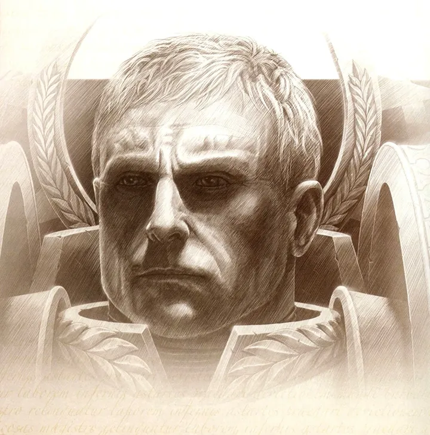
Codex Astartes คือหนังสือตำราการทหารขนาดมหึมาที่ Roboute Guilliman (โรบูท กิลลิมัน) Primarch แห่ง Ultramarines เขียนขึ้นหลังสงคราม Horus Heresy ในต้นสหัสวรรษที่ 31 เนื้อหากำหนด โครงสร้างกองทัพ ยุทธวิธีการรบ การสรรหาทหาร เครื่องหมายบนชุดเกราะ และหลักศีลธรรม ของ Space Marine ทุก Chapter
ทำไมต้องเขียน — สงคราม Horus Heresy พิสูจน์ว่า Legion ที่มีทหารนับแสนภายใต้ผู้นำคนเดียวนั้นอันตรายเกินไป เมื่อ Horus ทรยศ ครึ่งหนึ่งของ Space Marine ทั้งหมดก็ทรยศตาม กิลลิมันจึงเขียน Codex เพื่อให้ "ไม่มีใครคนเดียวจะคุมพลังของ Legion ทั้งหมดได้อีก" และเพื่อซ่อมจุดอ่อนทางพันธุกรรมที่ Chaos ใช้ล่อลวงทหาร
ทำไมสำคัญ — Codex คือเหตุผลที่ Space Marine ในยุค 40K มีหน้าตาอย่างที่เห็น: Chapter ละ 1,000 นาย แบ่ง 10 กองร้อย มีสีประจำกองร้อยบนขอบไหล่ และมีหน่วย Tactical–Assault–Devastator Space Marine ถือว่ามันเป็น คัมภีร์ศักดิ์สิทธิ์ ที่ได้รับพรจากจักรพรรดิ และใช้เป็นไม้บรรทัดวัดความถูกต้องของทุกการตัดสินใจในสนามรบ
ในเกมโต๊ะ คำว่า Codex คือหนังสือกติกาของแต่ละทัพ (เช่น Codex: Space Marines) ส่วน Codex Astartes คือคัมภีร์ในเนื้อเรื่องที่กิลลิมันเขียน — ชื่อหนังสือกติกาของ Space Marine ก็มาจากคัมภีร์เล่มนี้นี่เอง
01ประวัติการเขียนคัมภีร์
Codex ไม่ได้เกิดขึ้นในวันเดียว แต่สะสมจากบทเรียนนองเลือดตลอดสงคราม และถูกแก้ไขต่อมาอีกหมื่นปี
Legion ขยายตัวจนใหญ่เกินควบคุม
แต่ละ Legion มีทหารหลายหมื่นถึงกว่าแสนนาย ขึ้นตรงต่อ Primarch คนเดียว การสรรหาทหารเร่งรีบจนตรวจคัดพันธุกรรมไม่ละเอียด
ต้นแบบความคิด: จ่า Aeonid Thiel
หลัง Word Bearers ลอบโจมตีดาว Calth ทหาร Ultramarines ที่เหลือแตกเป็นหน่วยเล็ก ๆ รบใต้ดิน จ่า Thiel ตั้งหน่วยอิสระ "Red Marked" ตามล่าผู้ทรยศ รายงานของเขาทำให้กิลลิมันฉีกตำราเดิมทิ้ง แล้วประกาศว่า Ultramarines จะไม่ใช่ "ฝูงชนใต้ขุนศึก" อีกต่อไป แต่เป็น "ทหารหลายแสนนายที่หนุนกันและกัน"
Great Scouring และยุค Reformation
Legion ภักดีไล่ล่าผู้ทรยศจนหนีเข้า Eye of Terror กิลลิมันในฐานะ Lord Commander of the Imperium ปฏิรูปจักรวรรดิเกือบคนเดียว — แยกกองทัพมนุษย์เป็นทัพบก (Astra Militarum) กับทัพเรือ และเขียน Codex Astartes สำหรับ Space Marine
Second Founding — Legion ถูกแบ่ง
7 ปีหลังการตายของ Horus Legion ภักดีทั้ง 9 ถูกแบ่งเป็น Chapter ละ 1,000 นาย เกิดการทะเลาะรุนแรงระหว่าง Primarch
หมื่นปีแห่งการตีความ
ต้นฉบับสมบูรณ์สูญหาย เหลือสำเนาหลายฉบับ เก่าที่สุดคือ Apocrypha of Skaros นักการทหารหลายร้อยคนเขียนคำอธิบายเพิ่ม จน Codex ปลายยุค M41 กลายเป็น "ตำราที่รวมประสบการณ์ของนักยุทธศาสตร์หลายร้อยคน"
กิลลิมันฟื้นคืนชีพและแก้ไข Codex
หลัง Cadia ล่มสลายและเกิด Great Rift กิลลิมันกลับมา ปรับปรุง Codex ให้รองรับ Primaris Space Marines และการรบยุคใหม่ (รายละเอียดในข้อ 39)
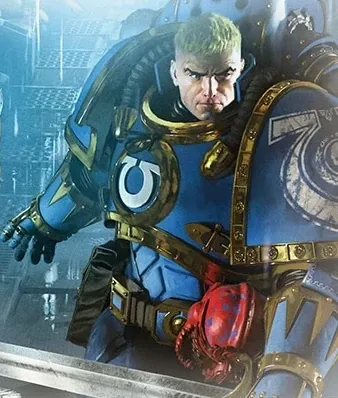
Battle of Calth · ยุค Horus Heresy (M31)Aeonid Thiel — จ่าหมวกแดงผู้เปลี่ยนความคิดของ Primarch
ก่อน Calth จ่า Aeonid Thiel แห่งกองร้อยที่ 135 ถูกลงโทษเพราะแอบคิดแผน "ถ้าต้องรบกับ Space Marine ด้วยกันเอง" — สิ่งที่ตอนนั้นไม่มีใครคิดว่าจะเกิดขึ้น หมวกของเขาถูกทาสีแดงเป็นสัญลักษณ์ว่ารอการพิจารณาโทษ
เมื่อ Word Bearers ลอบโจมตี Calth แผนที่เคยถูกลงโทษกลับช่วยชีวิตพี่น้อง Thiel รบบนเรือธง Macragge's Honour ช่วย First Chapter Master Gage และตั้งหน่วยเล็กอิสระชื่อ Red Marked ไล่ล่าผู้ทรยศในอุโมงค์ใต้ดิน ผู้นำหน่วยใหม่ทุกคนถูกทาหมวกสีแดงตาม Thiel
เมื่อรายงานต่อกิลลิมัน Primarch ฉีกเอกสารตำราเก่าของตัวเองทิ้งต่อหน้า และประกาศแนวคิดที่ต่อมากลายเป็นหัวใจของ Codex: หน่วยเล็กที่คล่องตัว ทำงานอิสระ แต่หนุนกันเป็นระบบ
ที่มา: นิยาย Know No Fear และเรื่องสั้น Rules of Engagement (ชุด The Horus Heresy)
ในเนื้อเรื่อง Codex Astartes เป็นตำราหลายเล่มที่ไม่มีการนับข้ออย่างเป็นทางการ และต้นฉบับสมบูรณ์สูญหายไปแล้ว เว็บนี้รวบรวมทุกบทบัญญัติที่ปรากฏในหนังสือทางการ (Codex, Index Astartes, Insignium Astartes) และนิยาย Black Library แล้วเรียบเรียงเป็น 52 ข้อใน 8 ภาคเพื่อให้อ่านง่าย — หมายเลขข้อจึงเป็นของเว็บนี้ ไม่ใช่เลขข้อในเนื้อเรื่อง
02ภาค 1 · หลักการสูงสุด (ข้อ 1–5)
กฎกลุ่มนี้คือเหตุผลที่ Codex ถูกเขียนขึ้น — ป้องกันไม่ให้เกิด Horus คนที่สอง
ห้ามผู้ใดคุมพลังของ Legion ทั้งหมดอีก — แบ่ง Legion เป็น Chapter
Legion ทุก Legion ต้องถูกแบ่งเป็นหน่วยย่อยอิสระที่เรียกว่า Chapter แต่ละ Chapter มีนักรบประมาณ 1,000 นาย
ก่อน Heresy แต่ละ Legion มีทหารนับหมื่นถึงกว่า 100,000 นาย Codex ใช้คำว่า "Chapter" ซึ่งเดิมเป็นหน่วยย่อยราว 1,000 นายภายใน Legion มาเป็นหน่วยมาตรฐานใหม่ นี่คือกฎที่ "ยาวนานและถกเถียงกันมากที่สุด" ของ Codex
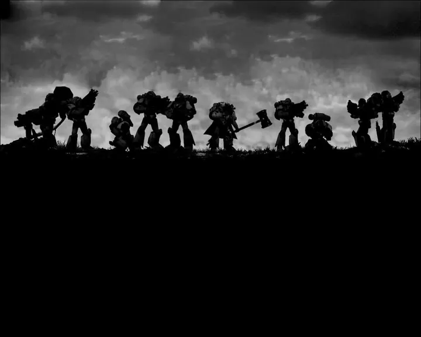
 การประชุมหลัง Horus Heresy · ต้น M31
การประชุมหลัง Horus Heresy · ต้น M31
Dorn ปะทะ Guilliman — จักรวรรดิเกือบเกิดสงครามกลางเมืองอีกครั้ง
Rogal Dorn Primarch แห่ง Imperial Fists ผู้ป้องกันพระราชวังบน Terra ปฏิเสธไม่ยอมแบ่ง Legion เขาเรียกกิลลิมันว่า "คนขี้ขลาด" ส่วนกิลลิมันกล่าวหา Dorn ว่านอกรีตและไม่จงรักภักดีต่อจักรพรรดิ
Primarch ที่เหลือแตกเป็นสองฝ่าย: Leman Russ (Space Wolves) และ Vulkan (Salamanders) เข้าข้าง Dorn ขณะที่ Jaghatai Khan (White Scars) และ Corvus Corax (Raven Guard) สนับสนุนกิลลิมัน
ท้ายที่สุด Primarch เกือบทุกคนยอมรับความจำเป็น Imperial Fists ถูกแบ่งเป็นหลาย Chapter — ผู้ที่ยึดตาม Codex ได้แก่ Crimson Fists ส่วนนักรบที่คลั่งศรัทธาที่สุดติดตาม Sigismund ไปตั้ง Black Templars และออกทำสงครามครูเสดที่ยาวนานที่สุดในประวัติศาสตร์เพื่อพิสูจน์ความภักดี
ที่มา: Index Astartes (Black Templars), Codex: Black Templars (4th Edition)
Chapter หนึ่งสืบชื่อ Legion — ที่เหลือต้องมีชื่อ ตรา และบ้านใหม่
ในแต่ละ Legion ให้ Chapter เดียวเก็บชื่อ ตรา สี และดาวบ้านเกิดเดิม Chapter อื่นที่แยกออกมา (Successor Chapter) ต้องมีชื่อ ตรา และป้อมปราการหรือดาวบ้านเกิดของตัวเอง
เพราะเหตุนี้ปัจจุบันจึงยังมี "Ultramarines", "Imperial Fists" ฯลฯ อยู่ ขณะที่ Chapter ลูกหลานมีชื่อใหม่ เช่น Novamarines, Crimson Fists, Flesh Tearers Chapter ที่สืบชื่อเดิมได้รับเกียรติพิเศษเหนือ Chapter พี่น้องอยู่บ้าง และเป็น Chapter เดียวที่ Primarch ยังคุมได้โดยตรง
Ultramarines เป็น Legion ที่ใหญ่ที่สุด จึงถูกแบ่งมากที่สุด Chapter ลูกเหล่านี้เรียกว่า Primogenitors ("บุตรคนแรก") ทุกวันนี้เชื่อว่ามากกว่า 1 ใน 3 ของ Chapter ทั้งหมดสืบเชื้อสายจาก Ultramarines
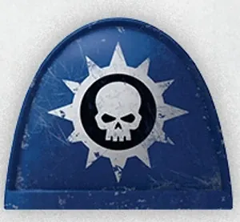
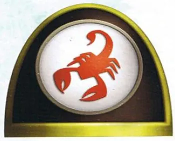
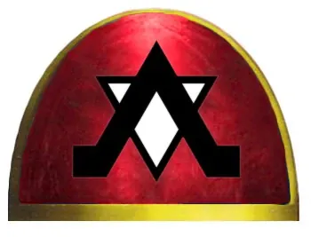

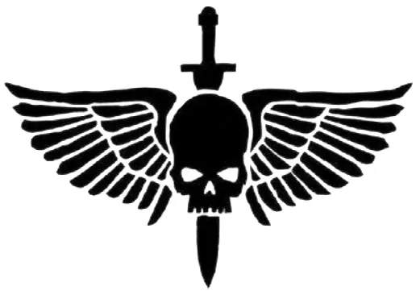
บันทึกใน Apocrypha of Skarosบุตร 23 คนของ Ultramarines — รายชื่อที่หายไป
สำเนา Codex ที่เก่าที่สุดที่ยังเหลืออยู่ ชื่อ Apocrypha of Skaros บันทึกว่า Legion Ultramarines ถูกแบ่งเป็น Chapter ใหม่ถึง 23 Chapter แต่ "ไม่ได้ระบุชื่อไว้ทั้งหมด" จนทุกวันนี้นักประวัติศาสตร์ของจักรวรรดิก็ยังเถียงกันว่า Chapter ไหนบ้างเป็น Second Founding ตัวจริง (บางแหล่งนับรวม Ultramarines เองเป็น 24)
บันทึกเดียวกันยังระบุว่า Space Wolves ถูกแบ่งเป็น 2 Chapter คือ Space Wolves เองและ Wolf Brothers — ขัดกับความเชื่อทั่วไปว่า Space Wolves ไม่เคยถูกแบ่งเลย และไม่มีสำเนาไหนบันทึก Successor ของ Salamanders ใน Second Founding
ที่มา: Index Astartes I "Codex Astartes: The Holy Tome of the Space Marines", Codex: Space Marines (5th Edition)
Chapter ต้องพึ่งตัวเองทุกด้าน
แต่ละ Chapter ต้องรับผิดชอบการสรรหา การฝึก และยุทโธปกรณ์ของตัวเอง และมีฐานเป็นดาวบ้านเกิด ป้อมปราการ (Fortress-Monastery) หรือกองเรือ
Chapter จึงเป็นกองทัพขนาดเล็กที่สมบูรณ์ในตัว — มีเรือรบ รถถัง โรงซ่อม ข้ารับใช้ (Chapter Serf) และดาวสรรหาทหาร แม้มีเพียง 1,000 นาย แต่พลังรบเทียบได้กับทหารมนุษย์อย่างน้อยสิบเท่าของจำนวนนั้น บาง Chapter ไม่มีดาวเลยและอาศัยบนกองเรือตลอดไป (Fleet-based Chapter)
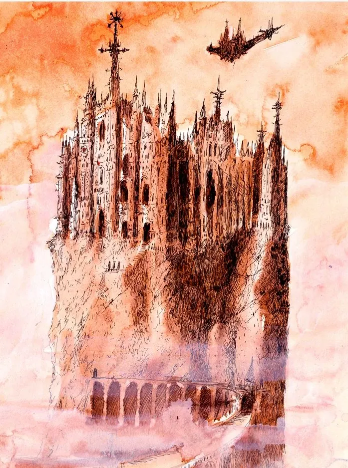
Chapter Master ขึ้นตรงต่อจักรพรรดิเท่านั้น
Chapter Master รับคำสั่งจากจักรพรรดิ (ผ่าน High Lords of Terra) เท่านั้น ไม่ขึ้นกับ Primarch ของ Legion เดิม — ยกเว้น Chapter ที่สืบชื่อ Legion
ผลคือ Chapter Master มีฐานะเท่าเทียมผู้ว่าการดาว (Planetary Governor) หลายคนปกครองทั้งดาวและระบบดาวรอบข้าง ในทางปฏิบัติจักรวรรดิต้อง "ขอร้อง" ไม่ใช่ "สั่ง" ให้ Chapter ไปรบ และ Chapter Master เป็นผู้เลือกว่าจะตอบรับคำร้องใด แม้ในสนามรบที่มีหลาย Chapter ก็ไม่มีใครบังคับใครได้ ต้องยอมทำงานร่วมกันเอง
อำนาจนี้มาพร้อมอันตราย — Codex เตือนว่าความหยิ่งผยองคือสิ่งที่ทำให้ผู้พิทักษ์มนุษย์เริ่มคิดว่าตนควรเป็นผู้ปกครองแทน
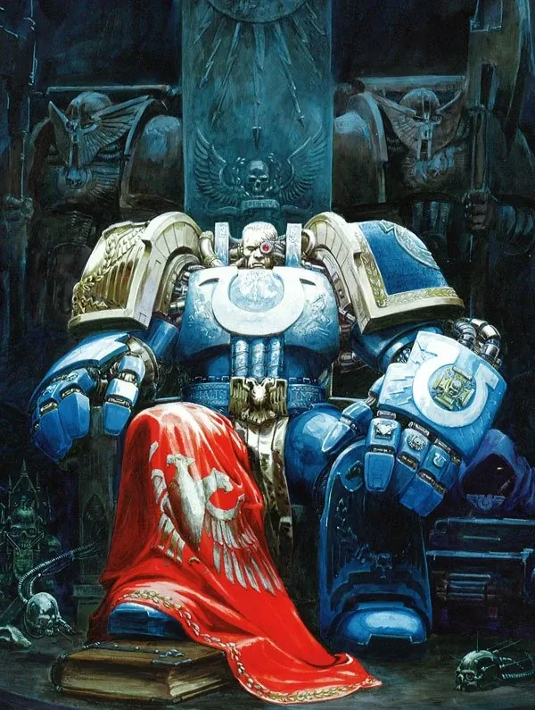
การตั้ง Chapter ใหม่ต้องมาจากคำสั่งสูงสุดเท่านั้น
มีเพียงจักรพรรดิ ผ่านสภา High Lords of Terra ที่สั่งให้ก่อตั้ง Chapter ใหม่ได้ (เรียกว่า "Founding")
Chapter ใหม่ไม่ได้ถูกสร้างทีละ Chapter แต่เป็นชุดพร้อมกันเรียกว่า Founding ต้องวางแผนนานหลายสิบถึงหลายร้อยปี Adeptus Mechanicus ต้องเพาะพันธุกรรม ดาว Forge World ต้องผลิตอาวุธ เรือ และเกราะ ต้องหาดาวบ้านเกิดที่คนมีพันธุกรรมบริสุทธิ์ และสร้างป้อมปราการ กว่า Chapter ใหม่จะพร้อมรบอาจใช้เวลาอย่างน้อยหนึ่งศตวรรษ ตลอดหมื่นปีมี Founding เกิดขึ้นราว 26 ครั้งหลัง First Founding
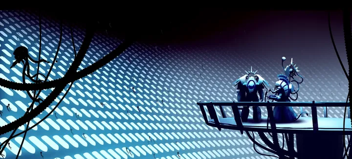
Ultima Founding — แผนสำรองหมื่นปีของกิลลิมัน
ก่อนถูกทำร้ายจนต้องเข้า Stasis เมื่อหมื่นปีก่อน กิลลิมันสั่งให้ Archmagos Belisarius Cawl พัฒนานักรบรุ่นใหม่ที่ตัวใหญ่ แข็งแรง และตอบสนองเร็วกว่าเดิม มีอวัยวะพันธุกรรมเพิ่มอีก 3 ชิ้น — Primaris Space Marines
เมื่อกิลลิมันฟื้นคืนชีพในฐานะ Lord Commander of the Imperium เขาใช้อำนาจสูงสุดสั่ง Founding ใหม่ทั้งหมด: บาง Chapter ใหม่ประกอบด้วย Primaris ล้วน เช่น Rift Stalkers และ Silver Templars อีกส่วนถูกส่งไปเสริม Chapter เก่าที่เสียหายหนัก เช่น Crimson Fists บนดาว Rynn's World ที่ได้พบ "พี่น้อง" บางคนที่เคยเห็น Rogal Dorn ด้วยตาตัวเองมาแล้ว
ที่มา: Codex: Space Marines (8th Edition), Dark Imperium
03ภาค 2 · พันธุกรรมและการสรรหา (ข้อ 6–10)
Heresy เผยว่าพันธุกรรม (Gene-seed) ของบาง Legion มีจุดอ่อนที่ Chaos ใช้ประโยชน์ได้ กิลลิมันจึงวางกฎเข้มงวดเรื่อง "การสร้างมนุษย์เหนือมนุษย์"
สร้าง Space Marine อย่างช้าและรอบคอบ
นับจากนี้ Space Marine ต้องถูกสร้างและฝึกอย่างช้า ๆ ภายในระยะเวลาที่ควบคุม ห้ามเร่งเพาะพันธุกรรม
ยุค Great Crusade ความต้องการทหารสูงมากจนบาง Legion ตรวจพันธุกรรมและคัดผู้สมัครไม่เข้มงวด กิลลิมันเชื่อว่าความบกพร่องที่สะสมนี้ทำให้ Chaos ล่อลวงทหารของ Horus ได้ง่าย Codex จึงกำหนดให้อวัยวะที่เพาะเลี้ยงทุกชิ้นต้องผ่านการทดสอบความบริสุทธิ์ขั้นสูงสุด
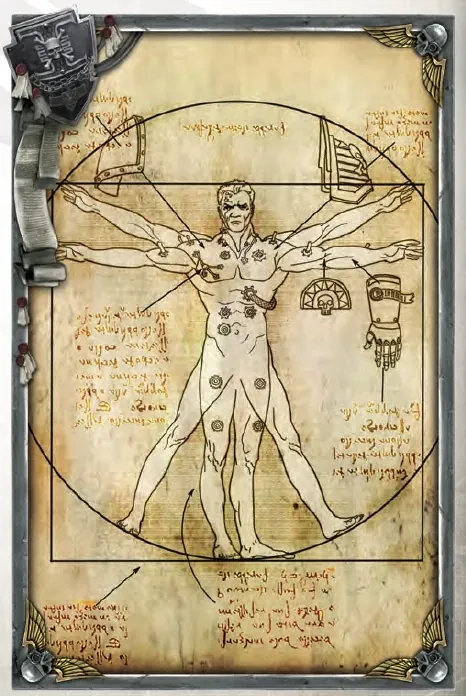
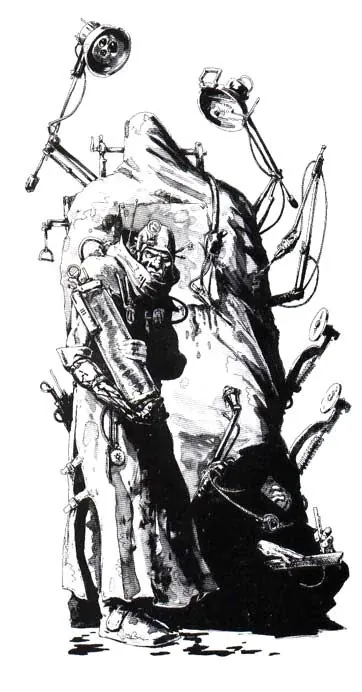
991.M35 · ก่อนยุค Age of ApostasyThe Cursed Founding — เมื่อพยายาม "ปรับปรุง" พันธุกรรม
Founding ครั้งที่ 21 เป็น Founding ที่ใหญ่ที่สุดตั้งแต่ Second Founding Genetor ของ Mechanicus ทดลองโครงการลับ "Homo Sapiens Novus" เพื่อแก้จุดบกพร่องใน Gene-seed และสร้างนักรบที่ใกล้เคียง Primarch
ผลคือหายนะ: Chapter จำนวนมากกลายพันธุ์ — Flame Falcons ร่างลุกเป็นไฟและถูก Grey Knights กวาดล้าง Blood Gorgons ถูกประกาศเป็นกบฏภายใน 60 ปี Black Dragons งอกกระดูกเป็นใบมีด ส่วน Lamenters และ Minotaurs รอดมาได้แต่ถูกมองด้วยความสงสัยตลอดไป — เครื่องยืนยันว่าทำไม Codex จึงห้ามเร่งหรือดัดแปลงพันธุกรรม
ที่มา: Codex: Space Marines (3rd–5th Edition), Index Astartes
ส่ง "ส่วย Gene-seed" ให้ Terra ตรวจสอบ
Adeptus Terra ต้องตั้งคลังพันธุกรรมเพื่อผลิตและเก็บ Gene-seed ที่ส่งมาเป็นส่วย Chapter ใหม่ต้องส่ง Gene-seed ส่วนหนึ่ง (ราว 5%) ให้ Adeptus Terra และ Mechanicus ตรวจ
คลังนี้เป็นแหล่งพันธุกรรมสำหรับ Founding ต่อไป และเป็น "สายจูง" สุดท้าย — การคุม Gene-seed ทำให้ มนุษย์ธรรมดา ไม่ใช่ Space Marine ยังคงเป็นผู้ปกครองที่แท้จริงของจักรวรรดิ เพราะมีเพียงพวกเขาที่สร้างหรือยุบกองทัพ Space Marine ได้
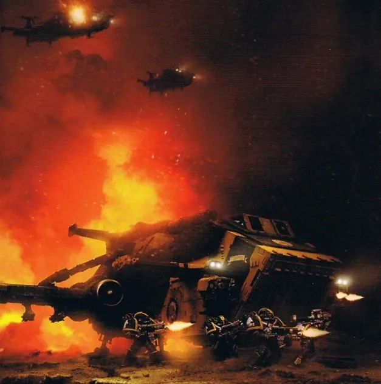
 901–913.M41 · Badab War
901–913.M41 · Badab War
ทรราชแห่ง Badab — Chapter ที่แอบโตเกินกฎ
Lufgt Huron Chapter Master ของ Astral Claws ผู้ได้รับหน้าที่ปกป้องเขต Maelstrom ขอกำลังเสริมจาก Terra ซ้ำแล้วซ้ำอีกแต่ถูกปฏิเสธ เขาจึงเริ่ม ส่งส่วย Gene-seed น้อยลงเรื่อย ๆ จนแทบไม่ส่ง
การสืบสวนภายหลังพบว่า Apothecarion ของ Astral Claws ลักลอบทดลอง เพาะพันธุกรรมแบบเร่ง จน Chapter มีทหารราว 3,500 นาย — ผิดทั้งข้อ 1, 6 และ 7 ของ Codex Huron ตั้งตนเป็น "Tyrant of Badab" ชักชวนอีกหลาย Chapter ก่อกบฏ นำไปสู่สงครามกลางเมือง Space Marine ที่ยาว 12 ปี
สุดท้าย Astral Claws พ่ายแพ้และหนีไปรับใช้ Chaos กลายเป็นโจรอวกาศ Red Corsairs ภายใต้ชื่อใหม่ของ Huron: Huron Blackheart
ที่มา: Imperial Armour Volume Nine & Ten: The Badab War (Forge World)
แยกสายพันธุกรรม ห้ามแลกเปลี่ยน และผนึกพันธุกรรมผู้ทรยศ
พันธุกรรมของแต่ละ Legion ต้องแยกเก็บไม่ให้ปนกัน พันธุกรรมของ Legion ทรยศต้องถูกผนึกด้วยระบบ Stasis ที่ล็อกด้วยเวลา และห้าม Chapter แบ่ง Gene-seed ให้กัน — Chapter ต้องพึ่ง Gene-seed ที่ได้จากร่างทหารของตัวเองเท่านั้น
ทุก Space Marine มีต่อม Progenoid 2 ต่อมที่เก็บพันธุกรรมไว้ เมื่อเขาตาย Apothecary ต้องเก็บต่อมนี้กลับไปสร้างนักรบรุ่นต่อไป — นี่คือเหตุผลที่ Apothecary ได้รับความเคารพสูงและต้องเสี่ยงชีวิตเก็บ Gene-seed กลางสนามรบ ในยุคนั้นหลายคนเชื่อว่าพันธุกรรมของผู้ทรยศถูกทำลายไปแล้ว
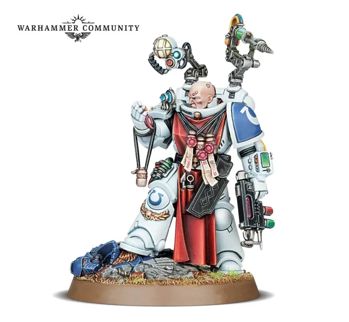
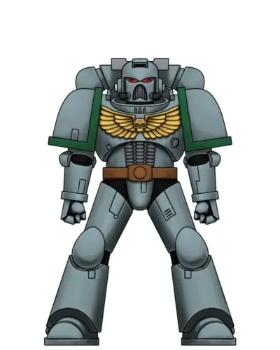
Second Founding → ต้น M31Wolf Brothers — Chapter ที่ถูกยุบเพราะพันธุกรรมไม่เสถียร
Space Wolves ตั้ง Successor Chapter เพียงหนึ่งเดียวชื่อ Wolf Brothers มอบกองเรือ คลังอาวุธ และนักบวชให้ครึ่งหนึ่ง หวังให้เป็นจุดเริ่มต้นของอาณาจักร "บุตรแห่ง Russ"
แต่พันธุกรรมของ Space Wolves (Canis Helix) ไม่เสถียร เมื่ออยู่ห่างจากดาว Fenris ทหาร Wolf Brothers กลายพันธุ์เป็น Wulfen จำนวนมาก Ordo Astartes แห่ง Inquisition จึงสั่งยุบ Chapter ทำลาย Gene-seed ทั้งหมด และให้ทหารเลือกระหว่าง "ตายในสนามรบอย่างมีเกียรติ" หรือ "ถูกประหาร" ทหารจำนวนมากหายตัวไปก่อนคำสั่งจะเสร็จสิ้น
นับจากนั้น Space Wolves ไม่มี Successor อีกเลยจนถึง Ultima Founding ในยุค M42
ที่มา: Codex: Space Wolves (5th Edition), นิยาย Battle of the Fang
คัดผู้สมัครด้วยการทดสอบที่โหดที่สุด
เด็กหนุ่มที่จะเป็น Space Marine ต้องผ่านการทดสอบความเหมาะสม และรับเฉพาะผู้มีจิตใจแข็งแกร่งที่สุดเท่านั้น
ผู้สมัคร (Aspirant) ส่วนใหญ่มาจากดาวเถื่อน (Feral World) ดาวยุคศักดินา หรือแก๊งในเมืองรังผึ้ง (Hive World) ที่โหดร้าย แต่ละ Chapter มีบททดสอบของตัวเอง เช่น ดวลเลือด ล่าสัตว์ร้าย เอาชีวิตรอดในป่า หรือทดสอบความรู้จักตนเอง ผู้ผ่านกลายเป็น Neophyte และแทบไม่ได้กลับไปพบครอบครัวอีก ผู้ที่ล้มเหลวระหว่างฝึกมักถูกล้างความจำไปเป็น Chapter Serf (ข้ารับใช้) หรือ Servitor
Apothecary และ Chaplain คอยเฝ้าดูดาวสรรหาทหารจากระยะไกล เพื่อรักษาความบริสุทธิ์ทางพันธุกรรมและจิตวิญญาณของประชากร
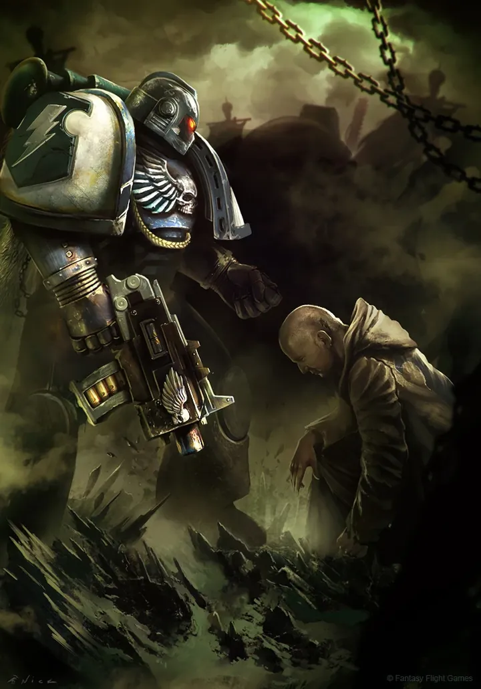
เส้นทางชีวิตทหาร: ไต่จากกองร้อยที่ 10 ถึงกองร้อยที่ 1
ทหารทุกนายเริ่มจาก Scout ในกองร้อยที่ 10 แล้วเลื่อนผ่านหน่วย Devastator → Assault → Tactical และถ้าเก่งพอจะได้เป็นทหารผ่านศึกของกองร้อยที่ 1
Codex ถือว่าหน่วย Tactical ต้อง "ผ่านทุกบทบาทมาก่อน" จึงเป็นทหารที่รอบรู้ที่สุด สถานะ Veteran ไม่ได้วัดจากอายุงาน แต่วัดจาก "เลือดที่เสีย ความสยดสยองที่ฝ่าฟัน และวีรกรรมที่ทำ" (หลาย Chapter ปรับลำดับนี้ต่างกันไป)
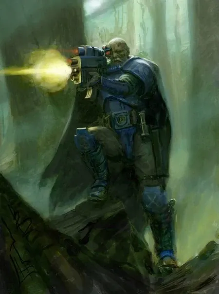
ปลาย M41 · Ultramarines กองร้อยที่ 10Torias Telion — ครูของกัปตันถึง 4 คน
Codex กำหนดให้หน่วย Scout นำโดยจ่าทหารผ่านศึกที่มีประสบการณ์สูงเท่านั้น Torias Telion คือตัวอย่างที่ดีที่สุด เขาได้สิทธิ์เข้า Honour Guard ของ Chapter Master หลายครั้ง แต่ เลือกอยู่กับ Scout ของกองร้อยที่ 10 เพื่อสร้างนักรบรุ่นต่อไป — กัปตัน Ultramarines ที่ยังรับราชการอยู่ถึง 4 คนยกความสำเร็จให้คำสอนของเขา
Telion เป็นพลแม่นปืนในตำนาน ในศึก Siege of Pallia เขายิงผู้บัญชาการ T'au และ Ethereal ด้วยกระสุนเพียงสองนัดจากระยะไกลเกินขีดจำกัดของปืน และต่อมาได้ปราบ Carnifex ในตำนาน Old One Eye บนดาว Calth ด้วยการยิงเข้าเบ้าตาที่บาดเจ็บ
ที่มา: Codex: Space Marines (5th Edition), นิยาย Calgar's Fury
04ภาค 3 · โครงสร้าง Chapter (ข้อ 11–20)
ส่วนที่มีชื่อเสียงที่สุดของ Codex — "สูตร" 10 กองร้อย × 100 นาย ที่ Chapter ส่วนใหญ่ใช้มาหมื่นปี
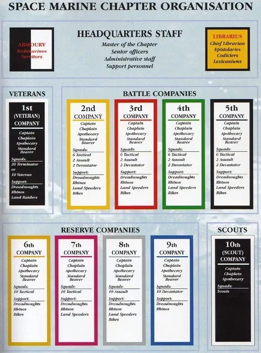
| กองร้อย | ประเภท | ประกอบด้วย (Codex ดั้งเดิม) | ตำแหน่งพิเศษของกัปตัน* |
|---|---|---|---|
| 1 | Veteran Company | ทหารผ่านศึก / Terminator · Land Raider · Venerable Dreadnought | — |
| 2 | Battle Company | Tactical 6 · Assault 2 · Devastator 2 | Master of the Watch |
| 3 | Battle Company | Tactical 6 · Assault 2 · Devastator 2 | Master of the Arsenal |
| 4 | Battle Company | Tactical 6 · Assault 2 · Devastator 2 | Master of the Fleet |
| 5 | Battle Company | Tactical 6 · Assault 2 · Devastator 2 | Master of the Marches |
| 6 | Reserve (Tactical) | Tactical 10 (ฝึกใช้มอเตอร์ไซค์) | Master of the Rites |
| 7 | Reserve (Tactical) | Tactical 10 (ฝึกใช้ Land Speeder) | Chief Victualler |
| 8 | Reserve (Assault) | Assault 10 | Lord Executioner |
| 9 | Reserve (Devastator) | Devastator 10 | Master of Relics |
| 10 | Scout Company | Scout (จำนวนไม่ตายตัว) | Master of Recruits |
* ตำแหน่งพิเศษตามธรรมเนียมของ Chapter ที่ทำตาม Codex (ยึดตาม Ultramarines) แต่ละ Chapter อาจสลับกองร้อยต่างกันได้ ส่วน Master of the Watch มักเป็นกัปตันกองร้อยที่ 2 แม้หน้าที่ประจำป้อมจะหมุนเวียนกันไป
10 กองร้อย กองละ 100 นาย — กองร้อยที่ 1 คือทหารผ่านศึก
Chapter แบ่งเป็น 10 กองร้อย กองละ 100 นาย (10 หน่วย หน่วยละ 10 นาย) กองร้อยที่ 1 ประกอบด้วยทหารผ่านศึกเท่านั้น และมีเพียงกองร้อยที่ 1 ที่ใช้ชุดเกราะ Terminator ของ Chapter ได้
ชุด Terminator (Tactical Dreadnought Armour) เป็นโบราณวัตถุที่สร้างใหม่ไม่ได้ ทนทานจนว่ากันว่าเดินในเตาปฏิกรณ์พลาสมาได้ ผู้สวมได้รับตรา Crux Terminatus บนไหล่ซ้าย ซึ่งเชื่อกันว่ามีเศษชุดเกราะที่จักรพรรดิสวมในวันสู้กับ Horus อยู่ข้างใน กองร้อยที่ 1 แทบไม่เคยออกรบพร้อมกันทั้งกอง มักแยกหน่วยไปเสริม Battle Company
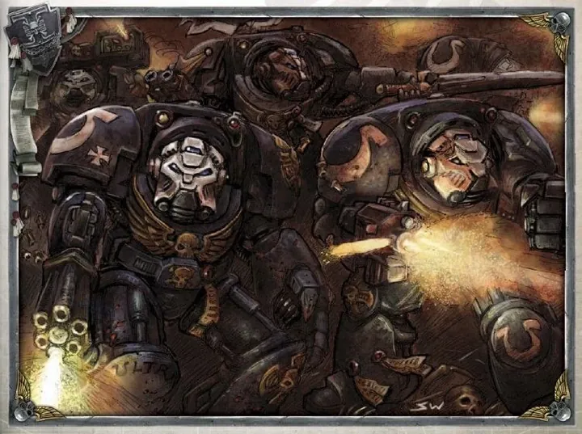
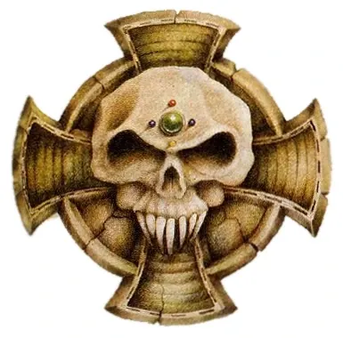
การยืนหยัดครั้งสุดท้ายของกองร้อยที่ 1
เมื่อ Hive Fleet Behemoth บุก Macragge ดาวบ้านเกิดของ Ultramarines Marneus Calgar มอบหมายให้ ทหารผ่านศึกกองร้อยที่ 1 ป้องกันป้อมขั้วโลก (Polar Fortresses) ซึ่งเป็นที่ตั้งปืนเลเซอร์ป้องกันดาว ถ้าป้อมแตก ดาวจะไม่มีปืนป้องกันเหลือเลย
Tyranids ยิงยานสปอร์นับพันลงใส่ป้อม ขณะที่ Calgar นำกองเรือไล่ตามยานแม่ของศัตรู เมื่อกองร้อยที่ 3 ฝ่าเข้าไปถึงห้อง Penitorium ชั้นล่างได้ในที่สุด พวกเขาพบซากศัตรูกองสูงหกชั้นรอบประตู และภายในห้องมี Terminator ยืนล้อมวงหันหลังชนกันจนตัวตาย — กองร้อยที่ 1 ของ Ultramarines ถูกทำลายจนคนสุดท้าย
ป้อมไม่แตก ดาวรอด ชื่อของพวกเขาถูกรำลึกทุกปีในเทศกาล Feast of Days และ Chapter ใช้เวลาหลายปีกว่าจะสร้างกองร้อยที่ 1 ขึ้นใหม่ได้
ที่มา: Codex: Ultramarines (2nd Edition), Codex: Space Marines (5th–8th Edition)
กองร้อยรบหลัก (Battle Companies) 2–5
กองร้อยที่ 2, 3, 4 และ 5 มีโครงสร้างเหมือนกัน: หน่วย Tactical 6 หน่วย Assault 2 และ Devastator 2 หน่วย
กองร้อยเหล่านี้แบกรับภาระการรบส่วนใหญ่ของ Chapter ใช้รถ Rhino และ Razorback เป็นพาหนะ มี Dreadnought ยิงสนับสนุน หน่วย Assault อาจเปลี่ยนเป็นมอเตอร์ไซค์หรือ Land Speeder ได้ และบางครั้งมีหน่วยบัญชาการ (Command Squad) ของทหารผ่านศึกคอยคุ้มกันนายทหาร กองกำลังที่ส่งออกรบส่วนใหญ่สร้างขึ้นรอบกองร้อยรบหนึ่งกอง แล้วเสริมด้วยหน่วยจากกองร้อยอื่น
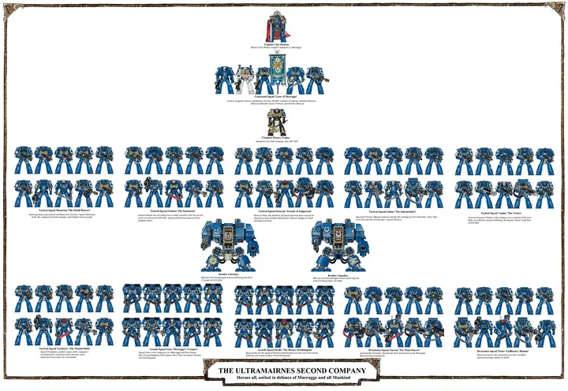
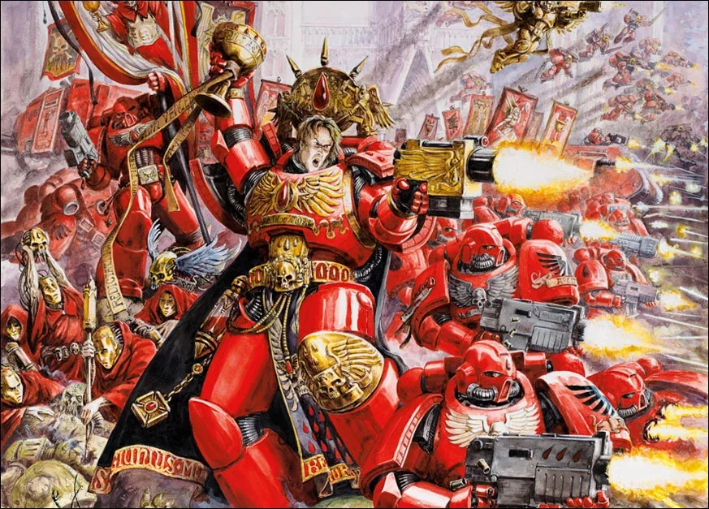
998.M41 · Third War for Armageddonหลายกองร้อยรบลงสนามพร้อมกัน
ปกติ Codex แนะนำให้ส่งกำลังเพียงไม่กี่หน่วยที่ออกแบบให้เหมาะกับภารกิจ แต่เมื่อ Ork Warlord Ghazghkull Thraka บุก Armageddon เป็นครั้งที่สาม High Lords ตัดสินว่า WAAAGH! นี้ต้องถูกหยุดให้ได้ก่อนลามเข้าใจกลางจักรวรรดิ
Chapter ในตำนานอย่าง Blood Angels, Salamanders และ Black Templars จึงส่ง กองร้อยรบเต็มกองหลายกอง ลงสนาม — ความยาวนานและดุเดือดของสงครามทำให้คำว่า "Armageddon" กลายเป็นคำหมายถึง "สงครามเต็มรูปแบบ" ในวัฒนธรรมของ Ork
ที่มา: Codex: Armageddon, Codex: Space Marines
กองร้อยสำรอง (Reserve Companies) 6–9
กองร้อยที่ 6 และ 7 เป็นหน่วย Tactical ล้วน กองร้อยที่ 8 เป็น Assault ล้วน และกองร้อยที่ 9 เป็น Devastator ล้วน
หน้าที่หลักคือเติมกำลังให้กองร้อยรบเมื่อมีผู้เสียชีวิต และเป็นกองหนุนที่ผู้บัญชาการส่งไปอุดจุดอ่อนหรือเจาะแนวศัตรู กองร้อยที่ 6 ฝึกใช้มอเตอร์ไซค์ทั้งกอง กองร้อยที่ 7 ฝึกขับ Land Speeder กองร้อยที่ 8 ใช้บุกประชิดตัวและยกพลขึ้นบก ส่วนกองร้อยที่ 9 มีอาวุธหนักที่สุดใน Chapter ใช้ป้องกันแนวและยิงระยะไกล Dreadnought มักอยู่แค่ในกองร้อยที่ 9
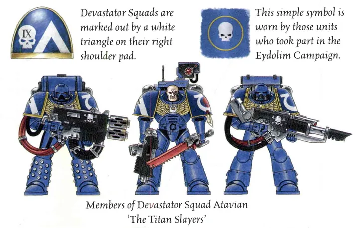
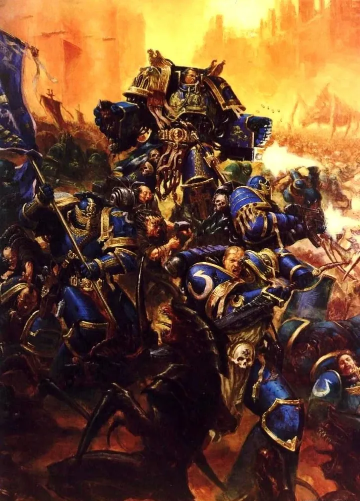
745.M41 · Battle of Macraggeกองร้อยที่ 3 และ 7 ลงไปช่วยป้อมขั้วโลก
ระหว่างศึก Macragge การติดต่อกับป้อมขั้วโลกขาดหาย Calgar จึงใช้ "กองหนุน" ตามแบบ Codex ส่ง กองร้อยที่ 3 (กองร้อยรบ) และ กองร้อยที่ 7 (กองร้อยสำรอง) ล่วงหน้าด้วยเรือ Strike Cruiser ความเร็วสูง ทิ้งตัวลงด้วย Drop Pod ตามด้วยยาน Thunderhawk ขนหน่วยสนับสนุน
ภาพที่รออยู่ข้างล่างคือความโกลาหลที่ไม่น่าเชื่อ ทั้งสองกองร้อยสูญเสียอย่างหนัก แต่ช่วยรักษาป้อมทางใต้ไว้ได้ และกองร้อยที่ 3 คือผู้ที่พบร่างของกองร้อยที่ 1 ที่ยืนหยัดจนตัวตาย
ที่มา: Codex: Ultramarines (2nd Edition), Battle of Macragge
กองร้อยที่ 10 — กองร้อยลาดตระเวน (Scout Company)
กองร้อยที่ 10 ประกอบด้วยหน่วย Scout ล้วน และไม่กำหนดขนาดตายตัว เพราะจำนวนผู้สมัครที่ผ่านการคัดเลือกไม่แน่นอน
Scout คือ Neophyte ที่การผ่าตัด การฝึก และการปลูกฝังวัฒนธรรม Chapter ยังไม่เสร็จ สวมเกราะเบา ทำหน้าที่ลาดตระเวน ซุ่มโจมตี และก่อวินาศกรรม หน่วย Scout มีจ่าทหารผ่านศึก 1 นายกับ Scout 4–9 นาย และ ไม่ใช้รถ Rhino หรือ Razorback ในฉบับแก้ไขยุคปัจจุบัน กองร้อยที่ 10 ยังมีหน่วย Vanguard ของ Primaris ประจำอีก 10 หน่วย
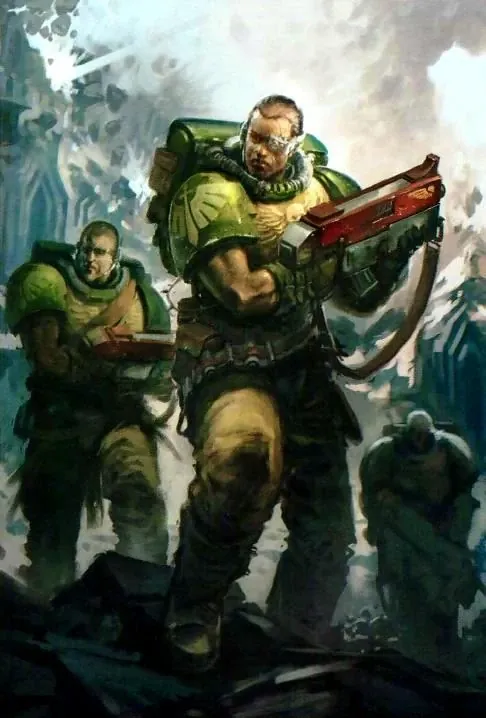
หน่วยละ 10 นาย แยกเป็น "Combat Squad" 5 นายได้
หน่วยทุกประเภท (ยกเว้น Scout) มี 10 นาย นำโดยจ่า และแบ่งเป็นสองหน่วยย่อย (Combat Squad) หน่วยละ 5 นายในการรบได้
- Tactical Squad — จ่า 1 + ทหาร 9 · ปืน Bolter 7 กระบอก อีก 2 นายถืออาวุธหนัก 1 (เช่น Missile Launcher, Heavy Bolter) และอาวุธพิเศษ 1 (เช่น Flamer, Meltagun) — หน่วยที่ยืดหยุ่นที่สุด
- Assault Squad — จ่า 1 + ทหาร 9 ใส่ Jump Pack ถือ Bolt Pistol กับ Chainsword มือละอย่าง 2 นายอาจถือ Plasma Pistol
- Devastator Squad — จ่า 1 + ทหาร 9 ถืออาวุธหนักได้สูงสุด 4 กระบอก ที่เหลือถือ Bolter คอยชี้เป้าและส่งกระสุน
- Veteran — Terminator, Sternguard (เชี่ยวชาญการยิง กระสุนพิเศษ) หรือ Vanguard (เชี่ยวชาญประชิดตัว มักใช้ Jump Pack)
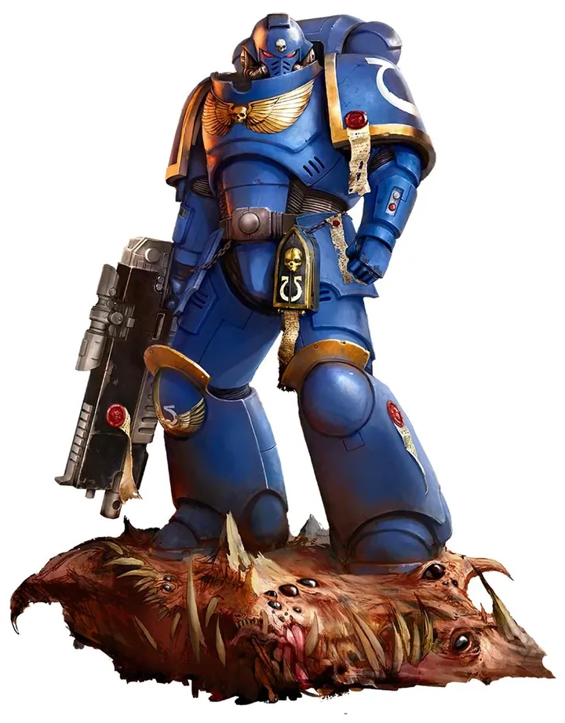
ทุกกองร้อยมีกัปตัน นักบวช หมอ ผู้ถือธง และแชมเปียน
นอกจากทหาร 100 นาย แต่ละกองร้อยมีกัปตัน (Captain), Chaplain, Apothecary และผู้ถือธง (Standard Bearer / Ancient) และให้ "นักรบที่เก่งที่สุดในกองร้อย" ได้รับแต่งตั้งเป็น Champion
"ในแต่ละกองร้อย นักรบที่เก่งกาจที่สุดจงได้รับการเจิมเป็น Champion เขาจะถืออาวุธและเกราะฝีมือเยี่ยม และปกป้องกัปตันจากอันตรายทั้งปวง แม้ต้องแลกด้วยชีวิต"— คำสอนของกิลลิมันใน Apocrypha of Skaros
"กัปตันนำจากแนวหน้า ด้วยแบบอย่างของเขา ทหารจะรู้ว่าการเป็น Adeptus Astartes คืออะไร … การมาของเขาคือสัญญาณแห่งการช่วยเหลือของผู้ภักดี และลางร้ายของผู้ทรยศทุกคน"— Apocrypha of Skaros
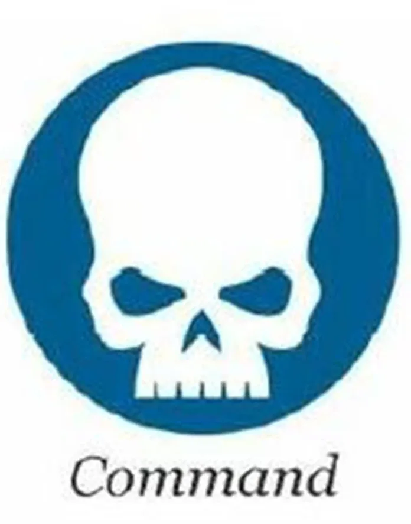
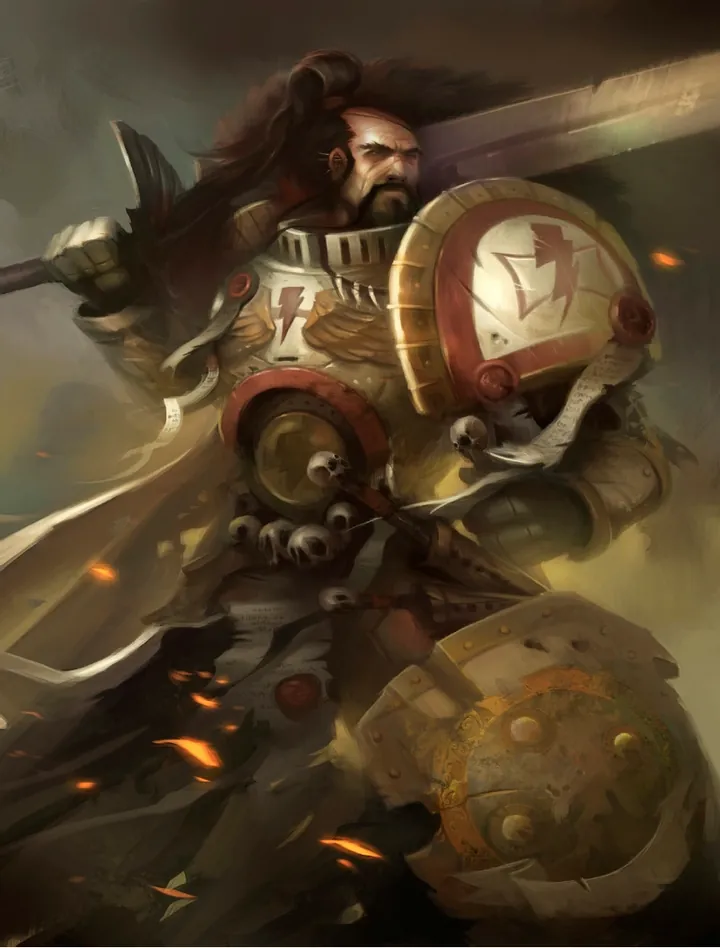
กองบัญชาการและผู้เชี่ยวชาญนอกกองร้อย
นอกโครงสร้างกองร้อย แต่ละ Chapter มีคลังอาวุธ (Armoury) ของ Techmarine หอ Librarius ของ Librarian กองเรือ และ Chapter Master พร้อมกองบัญชาการ ข้ารับใช้ และ Servitor
Codex บรรยายตำแหน่งกองบัญชาการไว้มาก แต่มีเพียงผู้ที่มีบทบาทรบจริงเท่านั้นที่ออกสนาม งานธุรการ เช่น การส่งเสบียง ส่วนใหญ่ทำโดยข้ารับใช้มนุษย์ (Chapter Serf) ตำแหน่งอื่นที่ปรากฏในเนื้อเรื่อง เช่น Lord of the Household และ Secretarius ของ Chapter Master


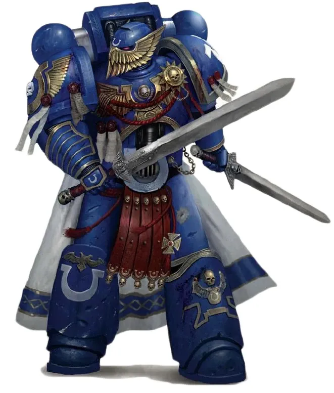
745.M41 · Cold Steel Ridge, MacraggeBrother Aloysius — องครักษ์ผู้แลกชีวิตให้ Chapter Master
บนสันเขา Cold Steel Ridge Tyranid ตัวใหม่ที่ Hive Mind สร้างขึ้นเพื่อสู้กับ Calgar โดยเฉพาะ — Swarmlord — วางกับดักซ้อนหลายชั้นจนแนวป้องกันแตก และพุ่งเข้าโจมตี Marneus Calgar จนบาดเจ็บสาหัส
Brother Aloysius ผู้บัญชาการ Honour Guard ยืนหยัด ต้าน Swarmlord และองครักษ์ของมันเพียงลำพัง เพื่อซื้อเวลาให้ยาน Thunderhawk ลงจอดรับ Calgar ขึ้นยาน Aloysius ล้มลง แต่ Chapter Master รอดชีวิตกลับไปนำกองเรือทำลาย Hive Fleet ได้ — ตรงตามหน้าที่ของ Honour Guard ที่ Codex กำหนด
ที่มา: Codex: Tyranids (5th Edition), Battle of Macragge
กัปตันทุกคนมี "หน้าที่ประจำ Chapter" เพิ่มอีกตำแหน่ง
นอกจากนำกองร้อยแล้ว กัปตันแต่ละคนต้องรับผิดชอบงานหนึ่งด้านของ Chapter หรือดาวบ้านเกิดด้วย
| ตำแหน่ง | หน้าที่ | ตัวอย่างใน Ultramarines |
|---|---|---|
| Master of the Watch | ผู้พิทักษ์ป้อมปราการและดาวบ้านเกิดเมื่อ Chapter Master ไม่อยู่ | Cato Sicarius (กองร้อย 2) |
| Master of the Arsenal | ดูแลคลังอาวุธและกระสุนของ Chapter | Mikael Fabian (กองร้อย 3) |
| Master of the Fleet | แม่ทัพเรือ สั่งการเรือธงและกองเรือทั้งหมด | Captain Idaeus |
| Master of the Marches | วางแผนการกระจายกำลังทั้ง Chapter — Chapter Master ปรึกษาก่อนทำสงคราม | Galenus |
| Master of the Rites | ดูแลพิธีกรรมสำคัญของ Chapter | Maximus Epathus → Ferren Areios (กองร้อย 6) |
| Chief Victualler | ดูแลเสบียง อาหาร และความต้องการของทหารและข้ารับใช้ | (กองร้อย 7) |
| Lord Executioner | ผู้นำกองร้อยจู่โจม นักฆ่าเลือดเย็นที่น่ากลัวที่สุด | Numitor (กองร้อย 8) |
| Master of Relics | ผู้นำกองร้อยอาวุธหนักและผู้ดูแลโบราณวัตถุ | (กองร้อย 9) |
| Master of Recruits | ฝึก Neophyte ทั้งหมดและนำกองร้อย Scout | (กองร้อย 10) |
 ปลาย M41
ปลาย M41
Cato Sicarius — Master of the Watch ผู้บังคับใช้ Codex
กัปตันกองร้อยที่ 2 ของ Ultramarines ("Guardians of the Temple") ดำรงตำแหน่ง Master of the Watch ผู้พิทักษ์ป้อมบน Macragge เมื่อ Chapter Master ไม่อยู่
นอกจากนั้น Sicarius ยังมีหน้าที่ ดำเนินคดีกับพี่น้องที่ละเมิดกฎศักดิ์สิทธิ์ของ Codex Astartes — งานที่หลายคนคิดว่าไม่เหมาะกับนักรบใจร้อนอย่างเขา แต่ Sicarius ทำด้วยความกระตือรือร้นเกือบคลั่ง แสดงให้เห็นว่าตำแหน่งพิเศษของกัปตันไม่ใช่แค่ชื่อ แต่เป็นงานจริงที่หนักพอ ๆ กับการนำทัพ
ที่มา: Codex: Space Marines (5th Edition)
คลังรถรบ: ยานพาหนะคือสมาชิกของ Chapter
ทุกกองร้อย (ยกเว้น Scout) มีรถ Rhino และ Razorback ของตัวเอง ยานรบอื่นเป็นของกลางที่ Armoury ดูแลและจัดสรรให้กัปตันตามภารกิจ Dreadnought ยังคงเป็นสมาชิกของกองร้อยเดิม
กองร้อยที่ 1 มี Land Raider ประจำ รถที่ถูกยืมไปจะติดเครื่องหมายของกองร้อยนั้น รถรบทุกคันได้รับ ชื่อที่สื่อถึงการปกป้องพี่น้อง ตั้งแต่วันที่สร้าง และวีรกรรมของมันถูกเฉลิมฉลองไม่ต่างจากวีรบุรุษที่เป็นคน ส่วน Dreadnought — นักรบที่บาดเจ็บปางตายในโลงเหล็ก — มีเกียรติประวัติสลักบนตัวถัง และถือเป็นประวัติศาสตร์ที่มีชีวิตของกองร้อย
"ดังที่เจ้าคืออัศวินผู้รับใช้จักรพรรดิ Rhino ก็คืออาชาของเจ้า จงให้เกียรติมัน เคารพมัน ดูแลให้มันได้สิ่งที่ต้องการ แล้วมันจะรับใช้เจ้าอย่างดีในทุกสมรภูมิ"— Apocrypha of Skaros
"จงทำให้คุณธรรมของ Predator เป็นของเจ้า ให้ความแน่วแน่ของเจ้าแข็งดั่งตัวถังของมัน … การรบเคียงข้าง Predator คือการรบเคียงข้างผู้พิทักษ์ที่ได้รับเกียรติสูงสุดคนหนึ่งของมนุษยชาติ"— Apocrypha of Skaros
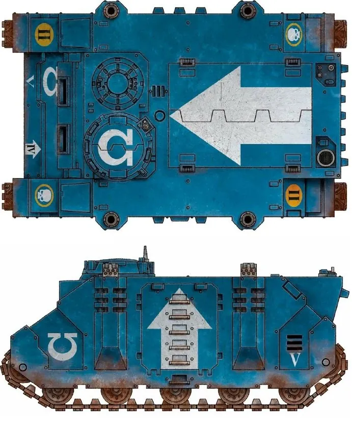
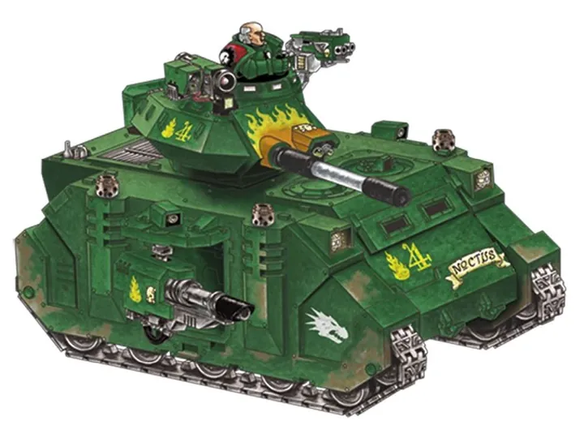
กองเรือของ Chapter — มีไว้บุกดาว ไม่ใช่แข่งกับทัพเรือ
ทุก Chapter มีกองเรือรบของตัวเองได้ แต่ตามข้อจำกัดหลัง Heresy กองเรือต้องเน้นการขนส่งภายในระบบดาวและการบุกดาว ส่วนการรบทางเรือขนาดใหญ่เป็นหน้าที่ของ Imperial Navy
- Battle Barge — เรือใหญ่ที่สุดเทียบเรือประจัญบาน Chapter ที่ทรงพลังมีแค่ 2–3 ลำ มักเป็นเรือธง
- Strike Cruiser — เรือเร็วขนทหารได้ทั้งกองร้อย ใช้บ่อยที่สุด
- เรือคุ้มกัน / Rapid Strike Vessel — เรือเล็กข้ามดาวได้ ใช้ลาดตระเวนและส่งหน่วยเล็กแทรกซึม
ในโรงเก็บของเรือคือ Drop Pod ตอร์ปิโดบุกเรือ ยาน Thunderhawk และเครื่องบินรบ บาง Chapter เช่น Black Templars อาศัยบนกองเรือทั้งหมดและมักละเลยข้อจำกัดนี้ จนเกิดความขัดแย้งทางการเมืองกับทัพเรือ
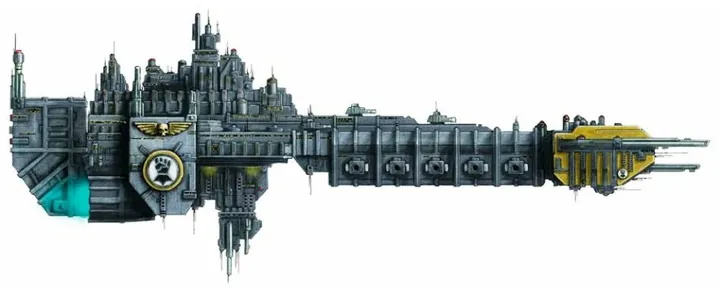
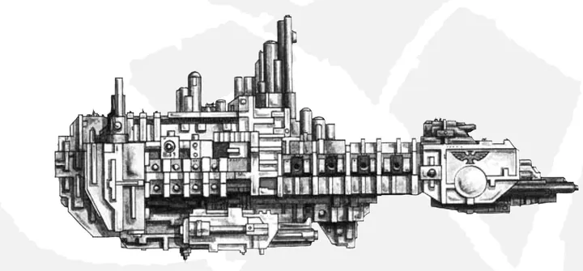
 745.M41 · ศึกในอวกาศเหนือ Macragge
745.M41 · ศึกในอวกาศเหนือ Macragge
Calgar บัญชาการกองเรือทั้งที่บาดเจ็บ
หลังถูกหามขึ้นเรือ Battle Barge Octavius Marneus Calgar ปฏิเสธการรักษาทุกอย่างยกเว้นที่จำเป็นที่สุด แล้วนำกองเรือ Ultramarines โจมตียานชีวภาพของ Hive Fleet Behemoth ที่แยกตัวออกมาทีละลำ
Calgar ไล่ตามกองเรือ Tyranids ไปจนถึงดาววงแหวน Circe ขอบระบบดาว ที่นั่นกองเรือเสริมของ Imperial Navy มาถึง และเรือประจัญบานลำหนึ่งพุ่งเข้ากลางฝูงแล้วระเบิดเครื่องยนต์ Warp ดึง Hive Fleet เกือบทั้งหมดลงสู่ความว่างเปล่า — ตัวอย่างที่ Chapter Fleet กับทัพเรือต้องทำงานคู่กันตามที่ Codex วางไว้
ที่มา: Battle of Macragge — Codex: Ultramarines (2nd Edition)
05ภาค 4 · ยุทธวิธีการรบ (ข้อ 21–28)
Codex สอนว่า Space Marine คือกองกำลัง "จู่โจมรวดเร็ว" ไม่ใช่กองทัพที่นั่งรบยืดเยื้อ — ความเร็ว ความประหลาดใจ และการรบแบบผสมผสานคือหัวใจ
ส่งกำลังที่ "พอดีกับภารกิจ" ไม่ใช่ทั้งกองร้อย
แทบไม่เคยส่งกองร้อยเต็มลงรบ ให้จัดกำลังเฉพาะกิจจากหน่วยต่าง ๆ ให้เหมาะกับภารกิจ นำโดย Captain, Lieutenant, จ่าอาวุโส, Chaplain หรือ Librarian
กำลังเฉพาะกิจทั่วไปอาจมีเพียง 3–4 หน่วยพร้อมยานรบและ Dreadnought ภารกิจใหญ่อาจใช้ 200–300 นาย ส่วนการรวม ทั้ง Chapter ในที่เดียวเกิดขึ้นนานหลายศตวรรษครั้ง — ต้องเป็นภัยที่อาจฉีกจักรวรรดิเป็นชิ้น ๆ ได้ และนำโดย Chapter Master ด้วยตัวเอง เช่น สงคราม Tyrannic Wars หรือ Macharian Heresy
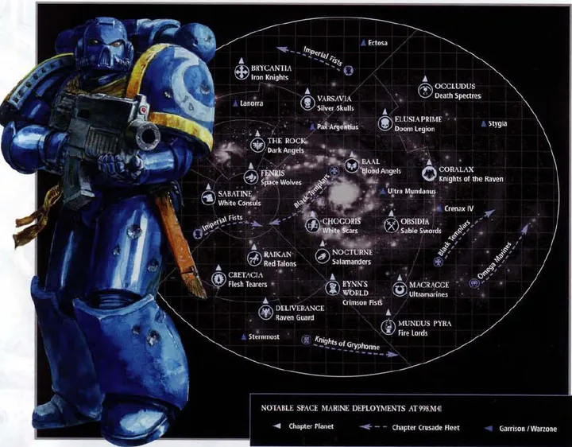
การบุกดาวและการจู่โจมจากฟ้า (Drop Assault)
ภารกิจต้นแบบของ Space Marine คือการบุกดาว: กองเรือกวาดเรือศัตรูและทำลายปืนป้องกันวงโคจร แล้วส่งกำลังลงกลางใจศัตรูอย่างรวดเร็วด้วย Drop Pod และ Thunderhawk
ความสำเร็จขึ้นกับ จังหวะและพิกัด — ถ้าลงถูกที่ Drop Pod คืออาวุธสร้างความหวาดกลัวขั้นสุด ถ้าพลาด Pod จะถูกยิงทีละลำ Codex แนะนำให้ผสม Drop Pod กับการส่งทหารทางอากาศ และต้องมีเครื่องบินคุ้มกันท้องฟ้าเสมอ หลาย WAAAGH! ของ Ork หยุดชะงักเพราะ Warboss และองครักษ์ถูกกำจัดด้วยการจู่โจมจากฟ้าครั้งเดียว
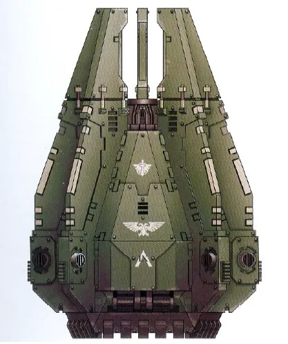
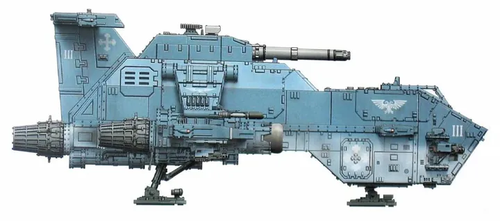
ปืนเลเซอร์แห่ง Ixx และการช่วยผู้ว่าการ Dhrax
Ixx: ดาวนี้มีปืนเลเซอร์ป้องกันทรงพลังจนทำลายกองเรือใดก็ได้ที่เข้าวงโคจร แต่ Space Marine ใช้การจู่โจมแบบผ่าตัด (Surgical Drop Assault) ลงไปทำลายฐานปืนจากภาคพื้น เปิดทางให้ทั้งดาวถูกบุกได้
Dhrax: เมื่อกองทัพกบฏล้อมวังของผู้ว่าการดาว Astra Militarum เคลื่อนกำลังไม่ทัน กองกำลังรักษาการณ์ของ Ultramarines จึงตกลงมาจากฟ้าเพื่อปกป้องผู้ว่าการไว้ได้ — สองตัวอย่างที่ Codex ใช้สอนเรื่องความเร็วและการเลือกเป้าหมาย
ที่มา: Codex: Space Marines (8th Edition) — ส่วน Drop Assaults
การรบแบบผสมผสาน: Tactical · Assault · Devastator
หน่วยทั้งสามแบบถูกออกแบบให้หนุนกันและกัน — ยิงกด เข้าประชิด และยิงสนับสนุนหนักพร้อมกันอย่างประสานงาน
"ข้าจะเล่าถึงนักรบ Tactical รากฐานของ Chapter และแบบอย่างของพี่น้อง … อาวุธที่แท้จริงของเขาคือความกล้า ไหวพริบ และความทุ่มเทต่อพี่น้อง ในการป้องกัน เขาจะมั่นคงดั่งภูผา ในการบุก เขาจะฟาดฟันด้วยความพิโรธของจักรพรรดิผู้เป็นอมตะ"— Apocrypha of Skaros
"นักรบ Assault จะลงมาจากฟ้าดั่งเทวทูตแห่งการพิพากษา ให้ Jump Pack เป็นปีก และเสียงเครื่องยนต์เป็นบทเพลงแห่งการแก้แค้น … เขาจะเป็นนักล่าขุนศึกและผู้สังหารกษัตริย์"— Apocrypha of Skaros
"ระยะของ Devastator จะไร้ขีดจำกัด สัมผัสของเขาจะไร้ความปรานี … ที่ใดเขายืน ที่นั่นคือป้อมปราการแห่งความชอบธรรม ทุกคนจะกลัวเขา และเขาจะไม่กลัวผู้ใด"— Apocrypha of Skaros
"จงใช้หน่วยมอเตอร์ไซค์ดั่งใบมีด … ความเร็วไร้ทิศทางไม่มีค่า เช่นเดียวกับอาวุธที่ไม่เล็ง ความเร็วคือข้อได้เปรียบ ความประหลาดใจคืออาวุธที่ร้ายแรงที่สุด"— Apocrypha of Skaros
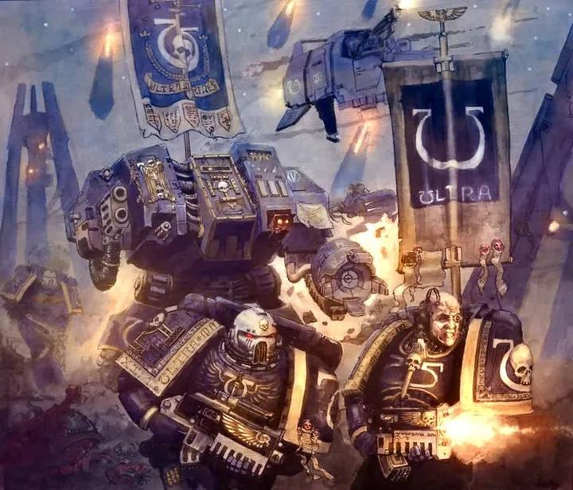
การปิดล้อม: อ้อมผ่าน หรือเจาะอย่างเป็นขั้นตอน
เมื่อการเคลื่อนที่ชะงักและจู่โจมเร็วไม่ได้ Codex ให้สองทางเลือก: อ้อมพื้นที่ที่ป้องกันหนาแน่นไป หรือปิดล้อมมัน — แต่ไม่ใช่การปิดล้อมยืดเยื้อหลายสิบปีแบบ Astra Militarum
การปิดล้อมแบบ Space Marine คือชุดการโจมตีที่ออกแบบไว้ล่วงหน้า: หยั่งเชิงแนวป้องกัน ล่อความสนใจ แล้วเจาะแนวหรือยึดเป้าหมายสำคัญ ใช้ยานเฉพาะทาง เช่น รถถัง Vindicator และ Ironclad Dreadnought Imperial Fists คือผู้เชี่ยวชาญด้านนี้ที่สุด
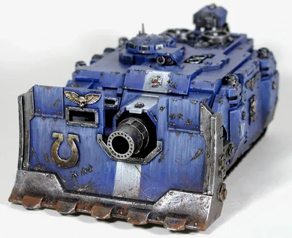
การลอบโจมตีและสงครามเงา
Space Marine ต้องใช้ความประหลาดใจ ไม่ว่าด้วยความเร็วหรือการพรางตัว — ซุ่มยิงจากจุดสูง ทิ้งตัวเงียบ ๆ แล้วโจมตีพร้อมกันในเสี้ยววินาที
หน่วยสไนเปอร์ซ่อนตัวในจุดคุมพื้นที่ Scout ใส่ผ้าคลุมพราง (Cameleoline) หน่วย Reiver ทิ้งตัวด้วยร่มชูชีพ แล้วเมื่อสัญญาณมา ทุกหน่วยโจมตีพร้อมกันก่อนตามด้วย Rhino หรือ Drop Pod — Codex ถือเป็น "ตัวอย่างสมบูรณ์ของการรบผสมผสาน" Raven Guard คือ Chapter ที่เก่งที่สุดในเรื่องนี้ ส่วนในยุคใหม่ Primaris ทุกคนต้องเรียนวิชา Vanguard (Eliminator, Infiltrator, Incursor, Reiver, Suppressor) ขณะอยู่กองร้อยที่ 10

หัวหอกยานเกราะ (Anvil Strike Force)
เมื่อศัตรูหรือภูมิประเทศต้องการ Chapter สามารถรวมรถรบทั้งคลังเป็นกองยานเกราะ นำโดยกัปตันบน Land Raider — กฎการตั้ง "Anvil Strike Force" มีมาตั้งแต่ Codex ฉบับแรก
Chapter Aurora ขึ้นชื่อเรื่องหัวหอก Land Raider ที่มี Land Speeder คอยกดศัตรู ส่วนจ่า Antaro Chronus ของ Ultramarines ได้รับการยกย่องจากการใช้เครื่องบินสนับสนุนและทหารยึดพื้นที่ที่รถถังตีได้ ในยุคใหม่รถถังลอยตัว Repulsor เพิ่มพลังให้ยานเกราะของ Space Marine อีกขั้น
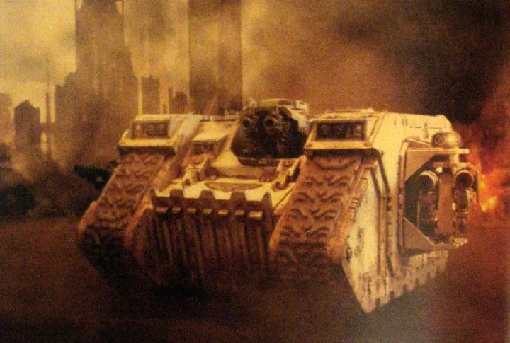
กัปตัน Dauuk และรถถังที่อยู่ในที่ที่คนอยู่ไม่ได้
ในเขต Halo Stars กัปตัน Dauuk แห่ง Iron Hands นำกองยานเกราะเข้าสู่ Warren Worlds — ดาวที่เต็มไปด้วยรังพิษของลัทธิ Heretek และสัตว์กลจักรที่มีความคิด
รถถัง Predator ของเขาไล่ล่าเครื่องจักรปีศาจและผู้บูชา Chaos ท่ามกลางอากาศพิษที่ ไม่มี Space Marine คนไหนอยู่รอดได้นาน แม้แต่ Iron Hands แต่ยานเกราะทนได้ และกวาดล้างดาวทั้งดวงได้ในเวลาไม่ถึงหนึ่งสัปดาห์ — เหตุผลที่ Codex เก็บกฎ Anvil Strike Force ไว้
ที่มา: Codex: Space Marines (8th Edition) — ส่วน Anvil Strike Force
กองกำลัง Terminator สำหรับสมรภูมิแคบและอันตรายที่สุด
ปกติ Terminator ถูกแบ่งไปเสริมกองร้อยรบ แต่ในยามจำเป็น Chapter อาจรวม Terminator ส่วนใหญ่ (หรือทั้งหมด) เป็นกองกำลังเดียว
ใช้ในการรบประชิดในพื้นที่แคบ เช่น กวาดล้างเอเลียนใน Space Hulk (ซากยานยักษ์ลอยในอวกาศ) บุกใจกลางป้อมพวกนอกรีต หรือขึ้นยึดเครื่องจักรสงครามขนาดยักษ์ Codex เตือนว่าความเสี่ยงสูงมาก เพราะชุด Terminator ทุกชุดสร้างใหม่ไม่ได้ ถ้ากองกำลังนี้ถูกทำลาย Chapter อาจไม่มีวันฟื้น
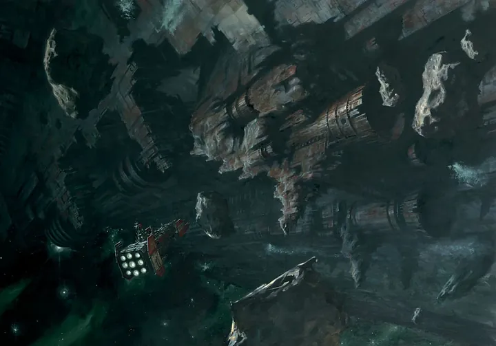
Sin of Damnation — Terminator 80 นาย ปะทะ Genestealer 40,000 ตัว
ครั้งแรกในปี 996.M40 Blood Angels บุก Space Hulk ลำหนึ่งในระบบ Secoris แต่ต้องเจอคลื่น Genestealer ที่ไม่มีวันหมด การรบกลายเป็นหายนะ — ทั้ง Chapter เหลือรอดเพียง 50 นาย
600 ปีต่อมา (589.M41) Blood Angels กลับไปอีกครั้ง คราวนี้ทำตามแบบ Codex: กัปตันกองร้อยที่ 1 Michaelus Raphael นำ Terminator 80 นาย บุกเข้าไป สังหาร Genestealer กว่า 40,000 ตัว และยึดยานได้สำเร็จ เหตุการณ์นี้คือพื้นเรื่องของบอร์ดเกมชื่อดัง Space Hulk
ที่มา: Space Hulk (บอร์ดเกม), Codex: Blood Angels
ผู้บัญชาการต้องเป็นนักยุทธศาสตร์ ไม่ใช่แค่นักรบ
Chapter Master ต้องไม่ใช่เพียงนักรบที่เก่งที่สุด แต่ต้องเป็นนักวางแผนชั้นยอดที่ยึดคำสอนของ Codex — รักษาชีวิตพี่น้องที่มีค่าไว้ แต่ต้องทำภารกิจให้สำเร็จและรักษาเกียรติของ Chapter
"ในฐานะผู้บัญชาการ เครื่องมือของเจ้ามีมากมาย แต่ผู้มีปัญญารู้ว่าชัยชนะได้มาด้วยเลือดเนื้อ ไม่ใช่เครื่องจักร เลือดเนื้อเรียนรู้ได้ เครื่องจักรต้องถูกสั่งตลอดไป … เมื่อวันมืดมิดที่สุดและชัยชนะไม่แน่นอน อย่ามองหาเครื่องจักร แต่จงมองหาพี่น้องของเจ้า พวกเขาจะเดินฝ่าไฟเพียงคำเดียวจากปากเจ้า"— Apocrypha of Skaros
Codex ยังบรรยายการรบจริงในประวัติศาสตร์พร้อมวิจารณ์การตัดสินใจของผู้บัญชาการ เพื่อให้รุ่นหลังเรียนรู้ บางส่วนดู "จุกจิกเกินกว่าจะเป็นงานของ Primarch" แต่ทั้งหมดคือความพยายามให้ทุกการตัดสินใจมีหลักการ

06ภาค 5 · เครื่องหมายและตราประจำหน่วย (ข้อ 29–34)
เมื่อมองชุดเกราะของ Space Marine คนหนึ่ง คุณจะรู้ได้ทันทีว่าเขาอยู่ Chapter ไหน กองร้อยไหน หน่วยประเภทใด และมียศอะไร — ทั้งหมดเพราะ Codex
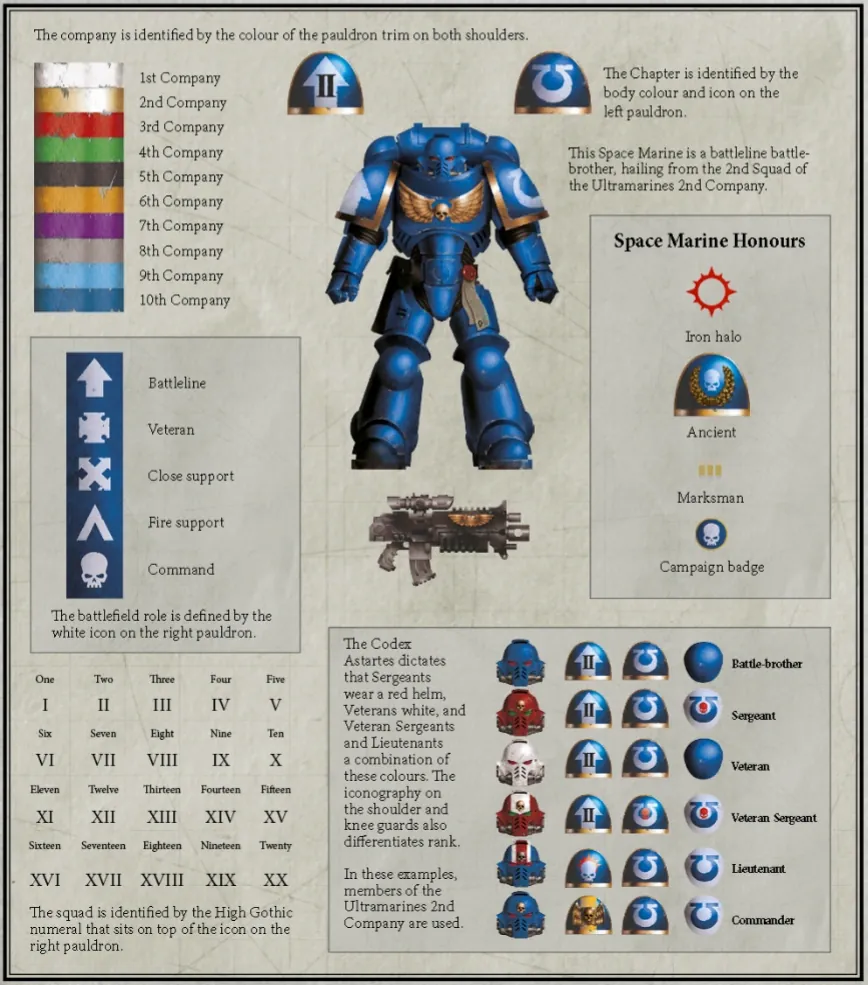
ไหล่ซ้าย = ตรา Chapter · ไหล่ขวา = เครื่องหมายหน่วย
Space Marine ต้องแสดงตรา Chapter บนเกราะไหล่ซ้าย และเครื่องหมายหน่วยบนเกราะไหล่ขวา ส่วนผู้สวม Terminator ให้ใส่ Crux Terminatus บนไหล่ซ้าย และย้ายตรา Chapter ไปไหล่ขวา
เกราะรุ่นเก่าบางรุ่นอาจแสดงเครื่องหมายหน่วยบนสนับเข่าหรือรวมไว้ในตรา Chapter แทน Codex ยังแนะนำรูปแบบย่อยอีกมาก
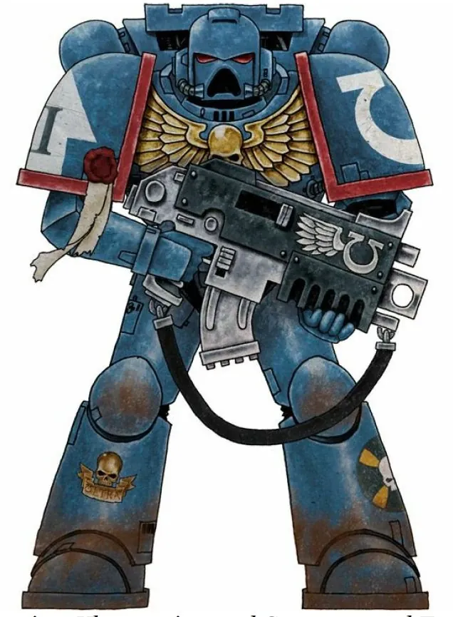
สีประจำกองร้อย 10 สี
แต่ละกองร้อยมีสีประจำ แสดงบนขอบเกราะไหล่ (หรือนกอินทรีบนอก ปลอกปืน สนับเข่า หมวก)
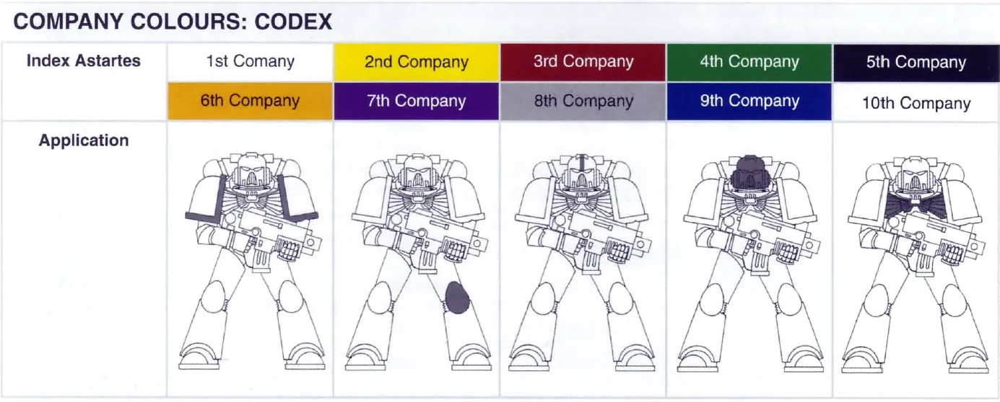
สัญลักษณ์ประเภทหน่วยและหมายเลขหน่วย
เครื่องหมายบนไหล่ขวาบอกประเภทหน่วยและหมายเลขหน่วยในกองร้อย
| ประเภท (ชื่อยุคใหม่) | ชื่อยุคเดิม | สัญลักษณ์ |
|---|---|---|
| Battleline | Tactical | ลูกศรชี้ขึ้น |
| Close Support | Assault | ลูกศรไขว้ / ลูกศรสี่ทิศชี้ออก |
| Fire Support | Devastator | รูปตัว V คว่ำ (บั้ง) |
| Veteran | Veteran | กางเขนแบบ Maltese (Crux) |
| Command | Command | หัวกะโหลก |
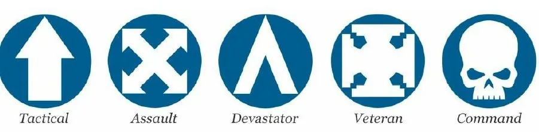
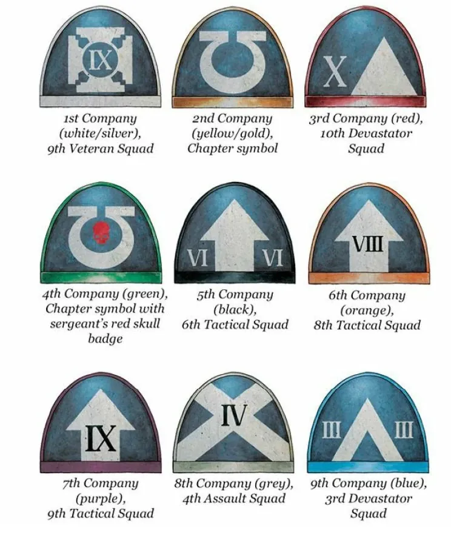
สีหมวกบอกยศ: แดง = จ่า · ขาว = ทหารผ่านศึก
หมวกสีแดงสงวนไว้สำหรับจ่า หมวกสีขาวหรือลายช่อชัยพฤกษ์คือทหารผ่านศึก จ่าอาวุโส (Veteran Sergeant) ใช้หมวกแดงพร้อมแถบขาวกลางหมวก ตรายศของจ่าคือหัวกะโหลกสีแดง
จ่าถือธงหน่วยที่มีตรา Chapter หมายเลขหน่วย และหัวกะโหลกแดง ส่วนการติดธงหลัง (Back Banner) เป็นดุลยพินิจของจ่าเอง
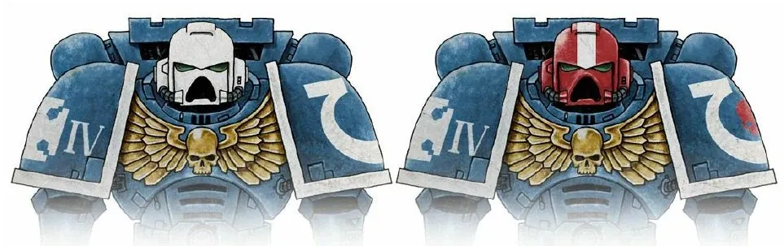
สีเกราะของผู้เชี่ยวชาญ
ผู้เชี่ยวชาญสวมเกราะสีเฉพาะไม่ว่าอยู่ Chapter ใด เพื่อให้พี่น้องจำได้ทันที (ยังติดตรา Chapter ตามปกติ)
Ultramarines เป็นตัวอย่างที่ Techmarine และ Apothecary ใช้สี Chapter เป็นหลักแต่ตกแต่งด้วยแดงหรือขาวมาก ส่วนกัปตันใช้ตรากองร้อย อาจเพิ่มตราประจำตัว

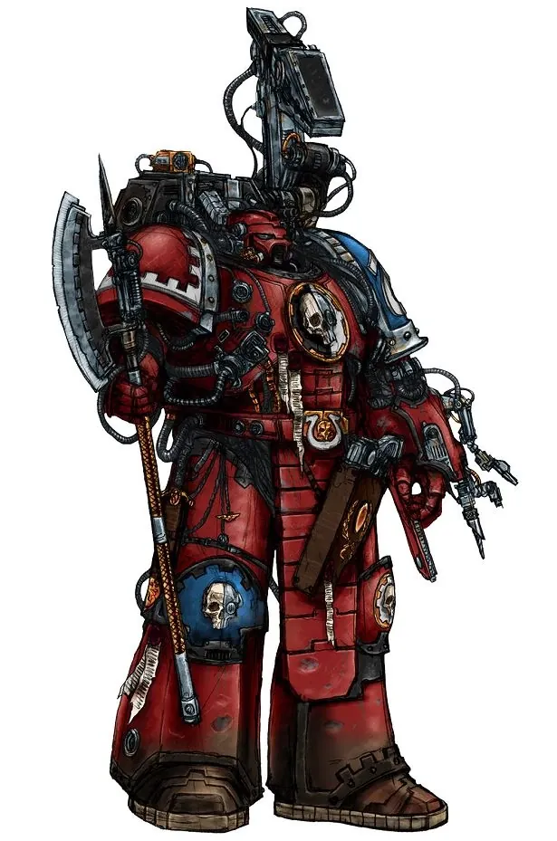
เครื่องหมายยานรบ ตราแคมเปญ และการเปลี่ยนตราเพื่อหลอกศัตรู
ยานรบต้องทาสี Chapter พร้อมเครื่องหมายหน่วย กองร้อย และหมายเลขประจำ เมื่อรบร่วมกับกองกำลังอื่นของจักรวรรดิ ผู้บัญชาการจะเลือกสัญลักษณ์ง่าย ๆ เป็น "ตราแคมเปญ" ติดทุกหน่วย — และ Codex แนะนำให้ Chapter เปลี่ยนเครื่องหมายเป็นครั้งคราวเพื่อสับสนหน่วยข่าวกรองของศัตรู
ตราแคมเปญมักทาบนตัวรถและสนับแข้งของทหาร หลังจบแคมเปญบางคนเก็บไว้บนเกราะถาวรเพื่อรำลึกวีรกรรมหรือผู้เสียชีวิต ลูกเรือรถถังแสดงหมายเลขรถในวงกลมบนไหล่ขวา ยานโบราณอาจมีคติพจน์และตราเกียรติยศของตัวเอง
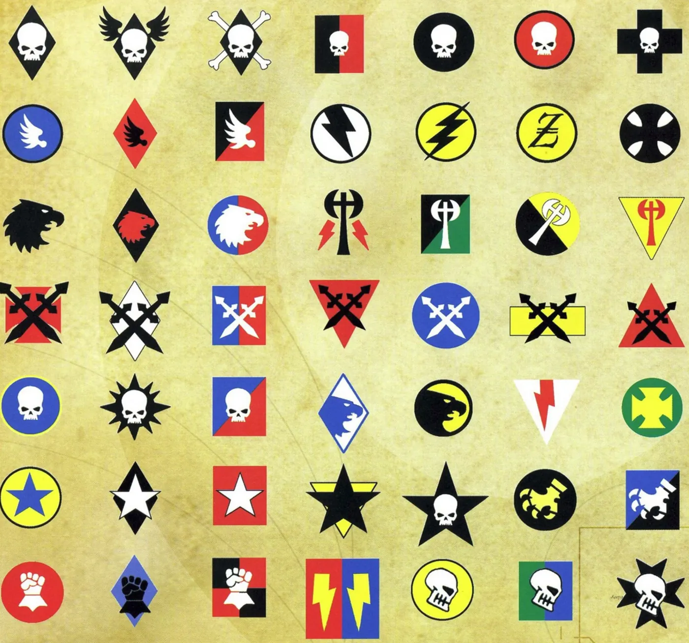
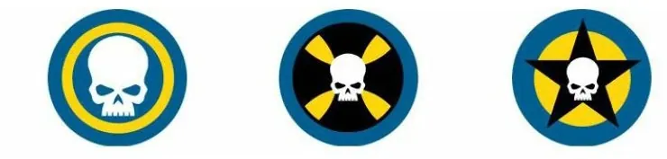
07ภาค 6 · ศีลธรรมและจิตวิญญาณนักรบ (ข้อ 35–36)
Codex ไม่ได้มีแค่ตารางและแผนผัง แต่วางอุดมคติว่า Space Marine "ควรประพฤติตนอย่างไร"
รู้หน้าที่ และปฏิบัติเหนือสิ่งอื่นใด
"จงรู้หน้าที่ของเจ้า และปฏิบัติมันเหนือสิ่งอื่นใด"— Codex Astartes บทที่ 4 วรรคที่ 1
"จงไตร่ตรองความยิ่งใหญ่ของหน้าที่เมื่อมีเวลา แต่เมื่อถึงเวลาต้องลงมือ จงทำโดยไม่ลังเล"— จาก "Legio Astartes Daily Rites"
"นักรบผู้ทำด้วยเกียรติจะไม่มีวันล้มเหลว หน้าที่ของเขาคือเกียรติ แม้ความตายของเขา — ถ้ามีเกียรติ — ก็คือรางวัล ไม่ใช่ความล้มเหลว เพราะมันมาจากการทำหน้าที่ จงแสวงหาเกียรติในทุกการกระทำ แล้วเจ้าจะไม่รู้จักความกลัว"— Roboute Guilliman
ประโยค "And They Shall Know No Fear" ที่กลายเป็นคำขวัญของ Space Marine ก็ถูกบันทึกไว้ในบทนำของ Apocrypha of Skaros ผ่านถ้อยคำของจักรพรรดิเอง
เป็นผู้พิทักษ์มนุษยชาติ ไม่ใช่ผู้ปกครอง
"พวกเขาจะบริสุทธิ์ในใจและแข็งแกร่งในกาย ไม่แปดเปื้อนด้วยความสงสัย ไม่มัวหมองด้วยการยกตน พวกเขาจะเป็นดวงดาวสว่างบนฟากฟ้าแห่งสงคราม เทวทูตแห่งความตายที่ปีกอันว่องไวนำความพินาศสู่ศัตรูของมนุษย์"— Roboute Guilliman
"จงให้พวกเขาก้าวข้ามกาแล็กซีดั่งเทพในยุคโบราณ ปกป้องมนุษยชาติจากการทำลายล้างของจักรวาลที่ไม่แยแส"— Apocrypha of Skaros
Codex เตือนว่าพลังของ Space Marine นำไปสู่ความหยิ่งผยอง และความหยิ่งผยองทำให้ผู้พิทักษ์เริ่มคิดว่า "ตนควรปกครองมนุษย์แทน" — บทเรียนตรงจาก Horus และต่อมาคือ Lufgt Huron แห่ง Badab

08ภาค 7 · การตีความและการแก้ไข (ข้อ 37–39)
Codex ไม่ได้ถูกบังคับใช้แบบตายตัว — และแม้แต่ผู้เขียนเองก็กลับมาแก้ไขมัน
ทำตาม "จิตวิญญาณ" แม้ไม่ทำตาม "ตัวอักษร"
Chapter ส่วนใหญ่ยึดตามหลักการของ Codex แม้บางส่วนจะปรับรายละเอียดตามวัฒนธรรมและพันธุกรรม Adeptus Terra ไม่เคยบังคับใช้ Codex แบบเด็ดขาด (และอาจทำไม่ได้ด้วย)
Chapter แบ่งเป็น 3 กลุ่ม: (1) ลูกหลานของ Ultramarines ทำตาม Codex อย่างเคร่งครัด (2) ลูกหลานของ Primarch อื่น ที่ทำตามเท่าที่พันธุกรรมยอม เช่น White Scars, Imperial Fists, Iron Hands, Raven Guard (3) กลุ่มนอกแบบ ที่ใช้โครงสร้างของตัวเอง เช่น Space Wolves และ Black Templars การละเมิด Codex ภายใน Chapter ที่เคร่งครัดอาจถูกลงโทษรุนแรง
 ปลาย M41 · สงคราม Tarsis Ultra
ปลาย M41 · สงคราม Tarsis Ultra
Uriel Ventris — ถูกเนรเทศเพราะละเมิด Codex
Uriel Ventris เรียนการคิดนอกกรอบ Codex จากอาจารย์ของเขา กัปตัน Idaeus ในศึก Tarsis Ultra เขาบุกเข้าไปสังหาร Norn-Queen ผู้ควบคุมฝูง Tyranids ร่วมกับ Kill Team ของ Deathwatch — ชัยชนะที่ช่วยทั้งดาวไว้
แต่การทำเช่นนั้นหมายถึง ทิ้งทหารของตัวเอง เมื่อกลับ Macragge จ่า Learchus รายงานการละเมิด Codex นี้ต่อผู้นำ Chapter Uriel รอดจากโทษประหาร แต่ Marneus Calgar ให้เขาและเพื่อนสนิท Pasanius รับ "Death Oath" ออกตามหา "สถานที่แห่งเหล็กดำ" จนต้องไปถึงดาวปีศาจ Medrengard ของ Iron Warriors ก่อนจะกลับมาได้รับตำแหน่งคืน
ที่มา: นิยายชุด Uriel Ventris โดย Graham McNeill (Warriors of Ultramar, Dead Sky, Black Sun)
ข้อยกเว้นที่มีชื่อเสียง — Chapter ที่ไม่ทำตาม Codex
บาง Chapter ได้รับการยอมรับให้ใช้โครงสร้างของตนเอง แม้จะละเมิดกฎพื้นฐานอย่างข้อ 1 ก็ตาม
| Chapter | ต่างจาก Codex อย่างไร |
|---|---|
| Space Wolves | ไม่เคยยอมรับ Codex เลย แบ่งเป็น 12–13 Great Company แทน 10 กองร้อย จัดทหารตามอายุ (Blood Claws → Grey Hunters → Long Fangs) และเชื่อกันว่ามีทหารเกิน 1,000 นาย |
| Black Templars | Sigismund ปฏิเสธ Codex ตั้งแต่แรก แบ่งเป็นกองครูเสดหลายกอง ไม่มีกองร้อย Scout (Neophyte ฝึกในหน่วยเดียวกับรุ่นพี่) Inquisition ลือว่ามีทหารราว 6,000 นาย |
| Dark Angels | ใช้ชื่อตำแหน่งจาก Order of Caliban กองร้อยที่ 1 (Deathwing) เป็น Terminator ทั้งหมด กองร้อยที่ 2 (Ravenwing) เป็นหน่วยเร็วทั้งหมด |
| Blood Angels | จัดตาม Codex เป็นหลัก แต่ต้องมี Sanguinary Priest แทน Apothecary และ Death Company สำหรับผู้คลั่ง Black Rage |
| Deathwatch | ไม่มีกองร้อยหรือหน่วยตายตัว หน่วยเดียวที่สำคัญคือ Kill Team ที่จัดตามภารกิจ |
| Grey Knights | ทุกนายเป็นผู้ใช้พลังจิต แบ่งเป็น Brotherhood 8 กอง ขึ้นกับ Ordo Malleus |
Sigismund — ครูเสดหมื่นปีเพื่อพิสูจน์ความภักดี
หลังการทะเลาะระหว่าง Dorn กับกิลลิมัน Sigismund อดีต First Captain ของ Imperial Fists มองว่า Codex คือ การดูหมิ่นคำสอนของ Rogal Dorn เขานำนักรบที่คลั่งศรัทธาที่สุดสวมเกราะดำ-ขาวตามแบบชุดของเขา ตั้ง Black Templars แล้วออกเดินทางไปรบในห้วงอวกาศทันที
ครูเสดนี้ดำเนินมาหมื่นปีโดยไม่เคยหยุด Sigismund นำ Chapter หลายศตวรรษจนอายุเกินพันปี และตายในการดวลกับ Abaddon ระหว่าง Black Crusade ครั้งแรก (781.M31) — แต่ก่อนตาย เขาฝังดาบดำลึกเข้าในร่างของ Despoiler
ที่มา: Codex: Black Templars (4th Edition), Index Astartes
Codex ฉบับแก้ไขยุค Era Indomitus
หลังฟื้นคืนชีพ กิลลิมันปรับปรุง Codex เพื่อรองรับ Primaris Space Marines และสงครามยุคใหม่ แต่ยังคงหัวใจ 1,000 นาย 10 กองร้อยไว้
- ประเภทหน่วยใหม่: Battleline, Close Support, Fire Support, Veteran และ Command (แทนการแบ่งแค่ Tactical/Assault/Devastator)
- ผู้นำเพิ่ม: กองร้อยละ 1 กัปตัน + 2 Lieutenant ที่นำ "ครึ่งกองร้อย" (Demi-company)
- หน่วยเล็กลง: กองร้อยอาจมีได้ถึง 20 หน่วย หน่วยละ 5 นาย
- เสริมกำลังชั่วคราว: ย้ายหน่วยจากกองร้อยสำรองไปเสริมกองร้อยรบได้ ทำให้กองร้อยมีเกิน 100 นายชั่วคราว
- กองร้อยที่ 10: นอกจาก Scout ยังมีหน่วย Vanguard ประจำ 10 หน่วย และไม่กำหนดขนาด
- ทหารยืดหยุ่นขึ้น: ทหารในหน่วยเดียวกันอาจแยกไปขับ Invictor Warsuit, Rhino หรือเป็น Aggressor ตามภารกิจ
"ของขวัญจากพระหัตถ์จักรพรรดิ" — เมื่อ Chapter เก่าไม่ยอมรับ Primaris
เมื่อกิลลิมันนำ Primaris มาเสริม Chapter เก่า Chapter Master หลายคนต้อนรับ แต่หลายคนระแวงอย่างรุนแรง — ทหารที่ "ไม่เคยผ่านกองร้อย Scout หรือ Devastator" สร้างโดยนักบวชเครื่องจักรที่ "พยายามทำดีกว่างานของจักรพรรดิ" ดูเหมือนขัดกับหลัก Codex ข้อ 6 และ 10 โดยตรง
Shield Host ของ Adeptus Custodes ชื่อ Emissaries Imperatus จึงก้าวออกมาประกาศว่า Primaris คือ พระประสงค์ของจักรพรรดิ และเดินทางไปกับครูเสดในฐานะ "Heralds of the Golden Throne" หลายคนขี่ Vertus Praetor ไปส่งข่าวให้ทุก Chapter — และ ไม่มีใครปฏิเสธของขวัญจากพระหัตถ์ของจักรพรรดิได้
ที่มา: Codex: Space Marines (8th Edition), Codex: Adeptus Custodes
09ภาค 8 · ผู้เชี่ยวชาญ ชีวิต และเกียรติยศ (ข้อ 40–52)
รายละเอียดที่ Codex กำหนดเกี่ยวกับตำแหน่งผู้เชี่ยวชาญ ขั้นตอนการเป็นนักรบ และธรรมเนียมที่ทำให้ Chapter เป็นมากกว่ากองทัพ
Librarius — ลำดับยศของผู้ใช้พลังจิต
ผู้ใช้พลังจิตของ Chapter ต้องผ่านการทดสอบและฝึกใน Librarius ไต่ยศจาก Lexicanium → Codicier → Epistolary และผู้นำคือ Chief Librarian
ผู้สมัครที่มีพลังจิตจะถูกทดสอบว่าจิตใจแข็งพอต้านการล่อลวงของปีศาจหรือไม่ ผู้ที่ผ่านจะได้หมวก Psychic Hood ที่ช่วยควบคุมพลังและกันพลังจิตศัตรู และอาวุธ Force Weapon ที่ส่งพลังจิตผ่านใบมีด Librarian ยังทำหน้าที่ทำนาย (Divination) สื่อสารทางจิต และเก็บรักษาบันทึกประวัติศาสตร์ของ Chapter
Reclusiam — ผู้พิทักษ์จิตวิญญาณ
Chaplain ของทุกกองร้อยขึ้นกับ Reclusiam นำโดย Reclusiarch และ Master of Sanctity (High Chaplain) ผู้ดูแลลัทธิประจำ Chapter
Chaplain ดูแลพิธีกรรม ความศรัทธา และขวัญกำลังใจ เทศนาปลุกใจกลางสนามรบ เฝ้าดูจิตใจของพี่น้องไม่ให้แปดเปื้อน และตรวจผู้สมัครใหม่ทางจิตวิญญาณ สวมเกราะดำ หมวกหัวกะโหลก ถือกระบอง Crozius Arcanum และสร้อย Rosarius ที่สร้างโล่พลังงาน
Apothecarion — หมอผู้เก็บอนาคตของ Chapter
Apothecary ต้องรักษาพี่น้อง และต้องเก็บต่อม Progenoid จากผู้ที่เสียชีวิตทุกคนกลับไปสร้างนักรบรุ่นต่อไป
Apothecary ใช้อุปกรณ์ Narthecium รักษาบาดแผล และ Reductor ผ่าเอาต่อม Progenoid ออกจากร่าง ถ้าพี่น้องบาดเจ็บจนไม่มีทางรอด Apothecary จะมอบ "Emperor's Peace" — การปลิดชีวิตอย่างเมตตา แล้วเก็บ Gene-seed ไว้ Apothecary ยังดูแลการผ่าตัดปลูกถ่ายอวัยวะให้ Neophyte และเฝ้าระวังการกลายพันธุ์ใน Gene-seed ของ Chapter
Techmarine — ช่างที่ผ่านการฝึกบนดาว Mars
ผู้ที่มีความสามารถด้านเครื่องจักรจะถูกส่งไปฝึกกับ Adeptus Mechanicus บนดาว Mars หลายปี แล้วกลับมาดูแลคลังอาวุธและยานรบของ Chapter
Techmarine เรียนพิธีกรรมปลุก Machine Spirit ภาษา Binharic และการซ่อมเครื่องจักรศักดิ์สิทธิ์ ได้แขนกล Servo-harness และ Servitor เป็นผู้ช่วย พวกเขาถือคำสาบานต่อทั้ง Chapter และ Machine God จึงอยู่ระหว่างสองโลกเสมอ ผู้นำคือ Master of the Forge ผู้ดูแล Armoury ทั้งหมด
Dreadnought — เกียรติของผู้บาดเจ็บปางตาย
นักรบที่มีเกียรติซึ่งบาดเจ็บจนร่างกายรักษาไม่ได้ อาจถูกบรรจุในโลงเหล็กของ Dreadnought เพื่อรับใช้ Chapter ต่อไป และยังคงเป็นสมาชิกของกองร้อยเดิม
Dreadnought ส่วนใหญ่ถูกให้หลับในภาวะจำศีลระหว่างสงคราม และถูกปลุกด้วยพิธีกรรมเมื่อ Chapter ต้องการ Dreadnought ที่อยู่มาหลายพันปี (Venerable Dreadnought) เป็นทั้งอาวุธและคลังความทรงจำที่มีชีวิต ผู้นำ Chapter มักขอคำปรึกษาจากพวกเขา เกียรติประวัติถูกสลักบนตัวถัง (ดูข้อ 19)
Chapter Champion และ Honour Guard
Chapter Master อาจเลือกทหารผ่านศึกเป็น Honour Guard องครักษ์นอกทะเบียนกองร้อย และมี Chapter Champion นักรบที่เก่งที่สุดของทั้ง Chapter คอยท้าดวลและปกป้อง
Honour Guard คือเกียรติสูงสุดที่ทหารผ่านศึกได้รับ สวมเกราะ Artificer และถือธงของ Chapter ส่วน Champion มีหน้าที่ตามคำสอนใน Apocrypha of Skaros: "ปกป้องกัปตันจากอันตรายทั้งปวง แม้ต้องแลกด้วยชีวิต"
ยศภายในหน่วย: Battle-Brother → Sergeant → Veteran
ทหารในหน่วยเรียกว่า Battle-Brother นำโดย Sergeant ส่วน Veteran Sergeant คือจ่าที่มีประสบการณ์สูง และมีสิทธิ์ฝึกหน่วย Scout
จ่าถือธงหน่วยและติดหัวกะโหลกแดงเป็นตรายศ (ข้อ 32) ทหารผ่านศึกจำนวนมากทำหน้าที่จ่าในกองร้อยต่าง ๆ ก่อนจะได้เข้ากองร้อยที่ 1 ทำให้กองร้อยทหารผ่านศึกเต็มไปด้วยผู้นำที่ผ่านการพิสูจน์แล้ว
Black Carapace — ขั้นสุดท้ายของการเป็น Space Marine
อวัยวะชิ้นสุดท้ายที่ปลูกถ่ายคือ Black Carapace ใต้ผิวหนังที่เชื่อมระบบประสาทกับชุด Power Armour — เมื่อได้รับแล้ว Neophyte จึงเป็น Battle-Brother เต็มตัว
เพราะยังไม่มี Black Carapace หน่วย Scout จึงใช้ Power Armour ไม่ได้และต้องสวมเกราะ Scout แบบเบา เมื่อผ่านการฝึกและพิสูจน์ตัวในกองร้อยที่ 10 จึงได้รับการผ่าตัดขั้นสุดท้ายและเข้าสู่ Devastator ในกองร้อยที่ 9 (ข้อ 10)
ข้ารับใช้และ Servitor
งานที่ไม่ใช่การรบ — เสบียง บริหาร ซ่อมบำรุง — ให้ข้ารับใช้มนุษย์ (Chapter Serf) และ Servitor ทำ เพื่อให้ Battle-Brother ทุกนายอุทิศตัวให้การรบ
ข้ารับใช้จำนวนมากมาจากผู้สมัครที่ล้มเหลวและถูกล้างความจำ บางคนไต่เป็นผู้ดูแลกิจการของ Chapter ในตำแหน่ง "Lord of the Household" ส่วน Servitor คือมนุษย์ที่ถูกลบความคิดและดัดแปลงด้วยเครื่องจักร ทำงานซ้ำ ๆ ให้ Techmarine และประจำปืนป้อม
ชื่อฉายาและธงประจำหน่วย
กองร้อยและหน่วยมีธงประจำที่บันทึกวีรกรรม และหลายกองร้อยมีชื่อฉายาของตัวเอง ธงเหล่านี้ถูกถือโดย Ancient และจ่าในสนามรบ
ตัวอย่างเช่นกองร้อยที่ 2 ของ Ultramarines มีฉายาว่า "Guardians of the Temple" การสูญเสียธงถือเป็นความอัปยศ ขณะที่การที่ธงยังตั้งอยู่ปลุกให้ทหารรอบข้างสู้หนักขึ้น Codex ปล่อยให้การติดธงหลังของจ่าเป็นดุลยพินิจ (ข้อ 32)
เหรียญและเครื่องหมายเกียรติยศ
วีรกรรมต้องถูกบันทึกบนเกราะ — ตราเกียรติยศมอบให้ตามความกล้าหาญและความชำนาญ และทหารแสดงไว้บนชุดเกราะอย่างภาคภูมิ
- Crux Terminatus — สิทธิ์สวม Terminator (ข้อ 11)
- Iron Halo — วงแหวนสร้างโล่พลังงาน มอบให้ผู้บังคับบัญชาที่กล้าหาญ
- Imperial Laurel — สำหรับวีรกรรมโดดเด่น
- Marksman's Honour — พลแม่นปืน
- Purity Seal — กระดาษคำอวยพรติดเกราะก่อนรบ
- Service Studs — หมุดบนหน้าผากแสดงอายุการรับใช้
ดูรายละเอียดทุกเหรียญที่ เหรียญตราและเกียรติยศ


โบราณวัตถุและอาวุธศักดิ์สิทธิ์
อาวุธและเกราะของ Chapter ต้องได้รับการดูแลอย่างพิถีพิถัน และจารึกเกียรติประวัติของผู้ใช้คนก่อนด้วยอักษร High Gothic
ชุดเกราะหลายชุดส่งต่อกันมาหลายพันปี รอยสลักแต่ละบรรทัดบันทึกการรบของเจ้าของเดิม ชุด Artificer Armour ที่ช่างฝีมือทำด้วยมือมอบให้ผู้มีเกียรติสูง ส่วนโบราณวัตถุพิเศษ (Chapter Relics) นำออกสนามเฉพาะในยามคับขันที่สุด โดยมี Master of Relics เป็นผู้ดูแล (ข้อ 18)
ดาวบ้านเกิด — ปกครองและปกป้อง
Chapter Master มีฐานะเทียบผู้ว่าการดาว ปกครองดาวบ้านเกิดและระบบดาวรอบข้างได้ ควบคุมทรัพยากร กองกำลังป้องกันดาว (PDF) Astropath และ Navigator ของ Chapter
ดาวบ้านเกิดเป็นทั้งแหล่งผู้สมัครและฐานทัพ Apothecary และ Chaplain เฝ้าดูประชากรจากระยะไกลเพื่อรักษาความบริสุทธิ์ทางพันธุกรรม (ข้อ 9) หลายเขตที่ Space Marine ปกครองกลับสงบและมั่นคงกว่าที่อื่น — แต่อำนาจนี้ก็เป็นดาบสองคม ดังที่เห็นใน Badab War (ข้อ 7)
09คำสอนของกิลลิมันที่เหลือรอด
ต้นฉบับสมบูรณ์ของ Codex สูญหายไปแล้ว ถ้อยคำเหล่านี้มาจากสำเนาอย่าง Apocrypha of Skaros และบันทึกที่ Space Marine ท่องจำกันมาหมื่นปี
"พวกเขาจะเป็นนักรบที่ดีที่สุดของข้า … ข้าจะปั้นพวกเขาดั่งดินเหนียว และหลอมพวกเขาในเตาไฟแห่งสงคราม พวกเขาจะมีเจตจำนงดั่งเหล็กและกล้ามเนื้อดั่งเหล็กกล้า … พวกเขาคือปราการของข้าต่อความสยดสยอง พวกเขาคือผู้พิทักษ์มนุษยชาติ พวกเขาคือ Space Marine ของข้า — และพวกเขาจะไม่รู้จักความกลัว"— จักรพรรดิแห่งมนุษยชาติ · บทนำของ Codex Astartes (Apocrypha of Skaros)
10Chapter ต้นแบบของ Codex
Chapter ที่ขึ้นชื่อว่าทำตาม Codex อย่างเคร่งครัดที่สุด ("Codex Chapter") ได้แก่ Ultramarines (ต้นแบบของทั้งหมด), Genesis Chapter, Red Scorpions, Praetors of Orpheus, Black Consuls, Novamarines และ Hammers of Dorn
ประโยค "The Codex Astartes does not support this action" ที่เห็นบ่อยในอินเทอร์เน็ต เป็นมีมล้อความเคร่งครัดของ Ultramarines ในหมู่แฟน ๆ ไม่ใช่ ข้อความจากหนังสือทางการ
11Codex Astartes ในเกมโต๊ะ
หลักการของ Codex ถูกแปลงเป็นกติกาในเกมหลายรุ่น เพื่อให้กองทัพ Space Marine "รู้สึก" ว่าทำตามคัมภีร์
- Combat Squads — กติการุ่นเก่าให้แบ่งหน่วย 10 นายเป็น 5 + 5 ก่อนวางกำลัง (ตามข้อ 15)
- Combat Doctrines — ใน Codex: Space Marines รุ่น 9 กองทัพเปลี่ยนหลักการรบตามรอบ: Devastator (ยิงหนัก) → Tactical → Assault (ประชิด) สะท้อนแนวคิดข้อ 23 และในรุ่น 10 Detachment Gladius Task Force ให้เลือกใช้แต่ละ Doctrine ได้ครั้งเดียวต่อเกม
- หน่วยนำ (Leader) — กัปตัน Lieutenant Chaplain Apothecary Librarian ที่ติดไปกับหน่วยในเกม ก็คือตำแหน่งตามข้อ 16–17
กติกาเปลี่ยนตามรุ่นของเกม เมื่อเล่นจริงในรุ่น 11 ให้ตรวจสอบจาก Codex ของ Space Marines ฉบับล่าสุดและแอป Warhammer 40,000 เสมอ ดูภาพรวมการจัดทัพที่ การจัดทัพ
12คำถามที่พบบ่อย
Codex Astartes มีกี่เล่ม/กี่หน้า?
ไม่มีการระบุจำนวนที่แน่นอน ในเนื้อเรื่องมันเป็น "ตำราขนาดมหึมา" ที่มีหลายเล่ม (มีการกล่าวถึง "เล่มที่ว่าด้วยบทบาทยุทธวิธี อุปกรณ์ เครื่องหมาย และโปรโตคอลการบัญชาการ") และมีคำอธิบายของนักการทหารรุ่นหลังเพิ่มเข้าไปอีกมาก
ทำไม Space Marine ทั้งจักรวรรดิมีแค่ราว 1,000 Chapter?
เพราะข้อ 1 จำกัด Chapter ละ 1,000 นาย และข้อ 5 ให้สร้าง Chapter ใหม่ได้ผ่าน Founding เท่านั้น ผลคือมี Space Marine รวมราวหนึ่งล้านนาย — น้อยกว่า 1 นายต่อดาวหนึ่งดวงของจักรวรรดิ
Codex ใช้กับ Space Marine ฝ่าย Chaos ไหม?
ไม่ Legion ที่ทรยศหนีเข้า Eye of Terror ก่อน Codex จะถูกใช้ พวกเขายังจัดองค์กรแบบ Legion เก่าหรือแบบ Warband และมองว่า Codex คือ "การฉีก Legion" ที่น่ารังเกียจ
Codex กำหนดกองทัพมนุษย์ด้วยไหม?
Codex Astartes ว่าด้วย Space Marine เท่านั้น แต่ในยุคเดียวกันกิลลิมันยังปฏิรูปกองทัพมนุษย์ แยกเป็น Astra Militarum (ทัพบก) และ Imperial Navy (ทัพเรือ) เพื่อไม่ให้แม่ทัพคนใดมีทั้งทหารและเรือพอจะก่อกบฏ
ถ้าละเมิด Codex จะเกิดอะไรขึ้น?
ขึ้นกับ Chapter — ใน Chapter ที่เคร่งครัดอย่าง Ultramarines อาจถูกไต่สวนและลงโทษรุนแรง (ดูเหตุการณ์ของ Uriel Ventris ในข้อ 37) ส่วนการละเมิดกฎระดับจักรวรรดิ เช่น ขยายกำลังเกินหรือไม่ส่ง Gene-seed อาจนำไปสู่การถูกประกาศเป็นกบฏ (ข้อ 7)
13แหล่งอ้างอิง
- Warhammer 40k Wiki — Codex Astartes, Apocrypha of Skaros, Second Founding, Adeptus Astartes, Chapter Command
- หนังสือต้นฉบับ (อ้างผ่านวิกิ): Index Astartes I "Codex Astartes: The Holy Tome of the Space Marines", Codex: Space Marines (รุ่น 4, 5, 8 และ 9), Codex: Ultramarines (รุ่น 2), Insignium Astartes, Imperial Armour: The Badab War
- นิยาย Black Library: Know No Fear, Rules of Engagement, ชุด Uriel Ventris, Battle of the Fang, Dark Imperium
คำพูดใน Codex ถูกแปลเป็นภาษาไทยโดยถอดความ ไม่ใช่การแปลคำต่อคำ ปีและตัวเลขยึดตามแหล่งที่อ้าง ซึ่งบางครั้ง Games Workshop เองก็ให้ข้อมูลไม่ตรงกันในแต่ละรุ่น
Space Marine เจาะลึก เนื้อเรื่อง Ultramarines ลำดับยศทุกฝ่าย